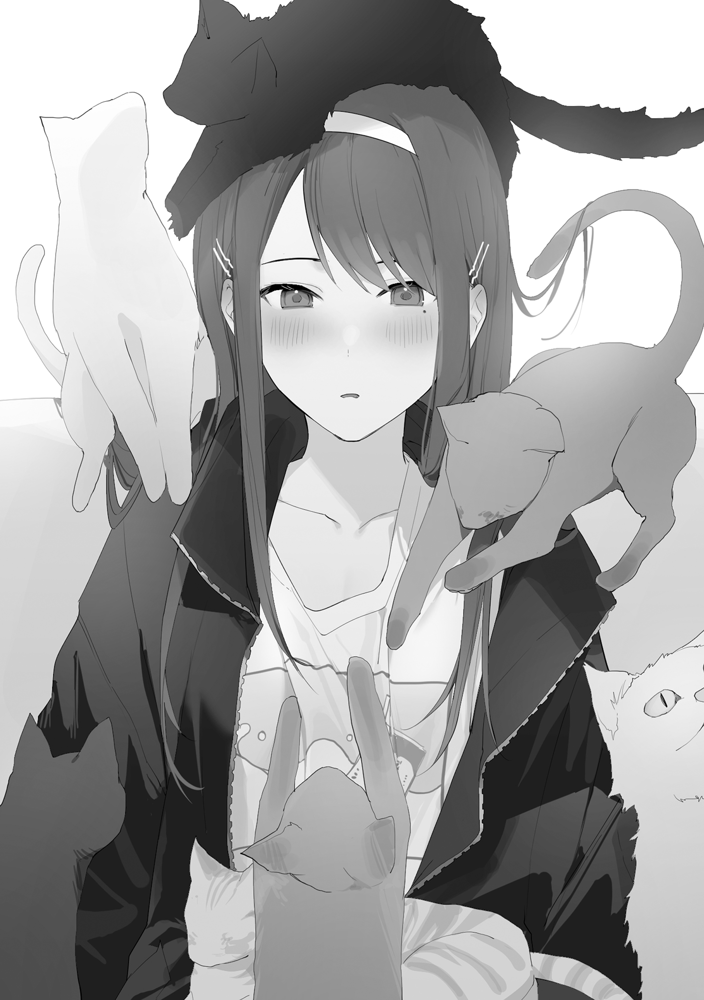
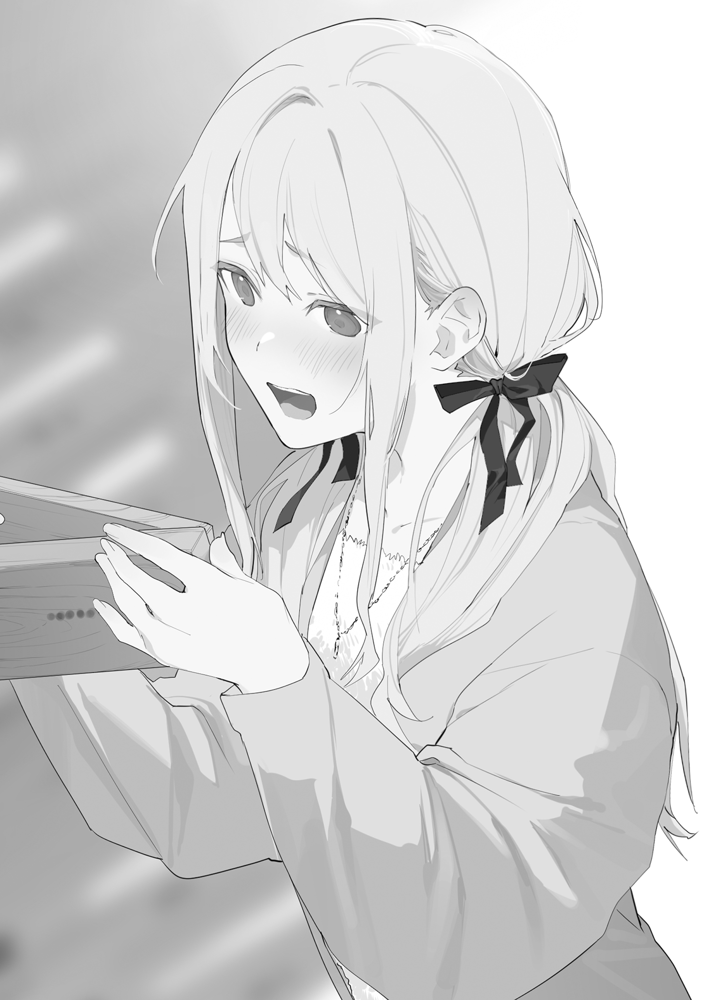
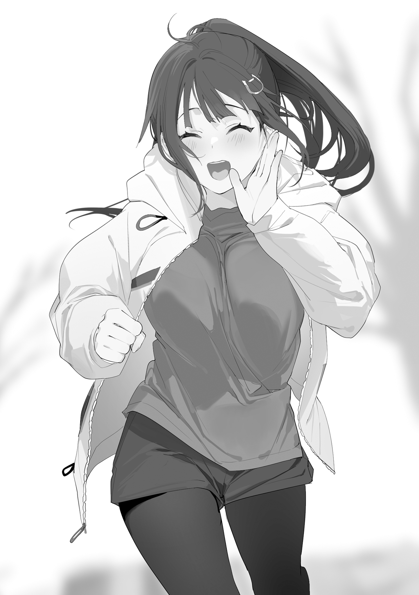
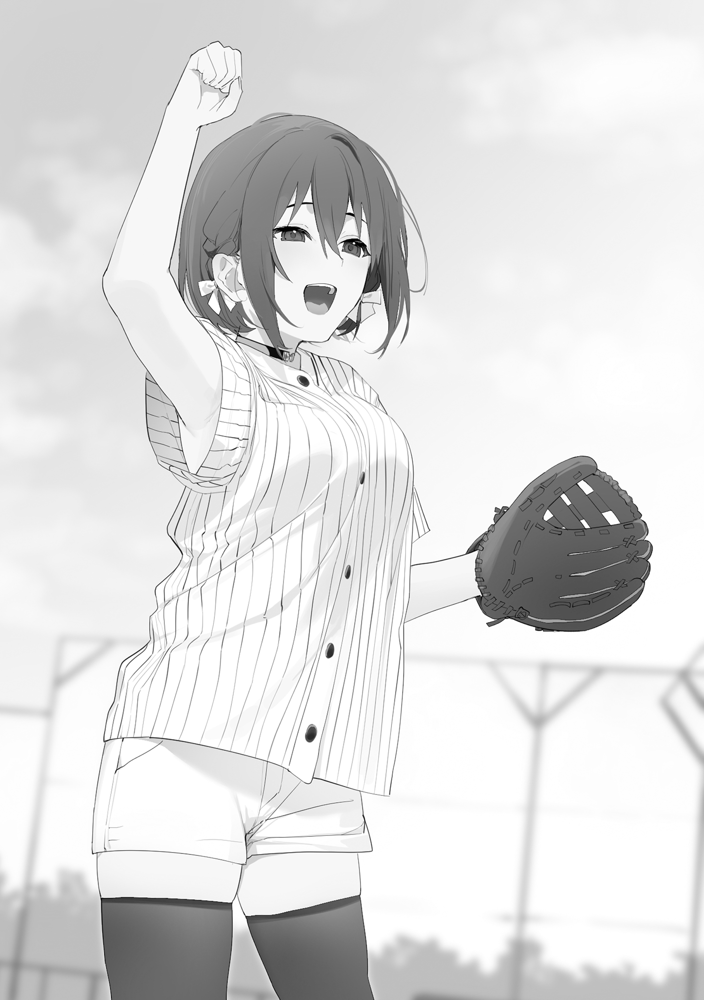
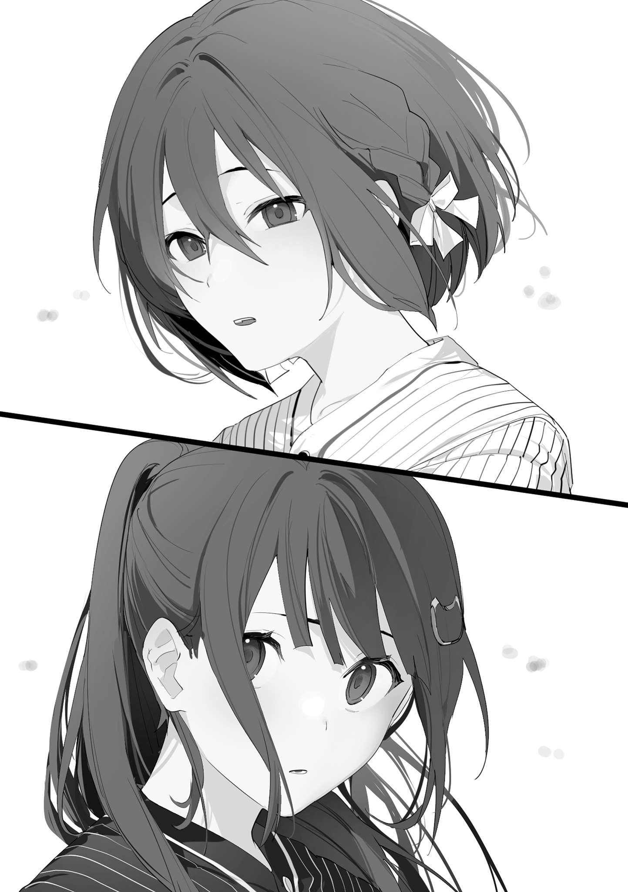
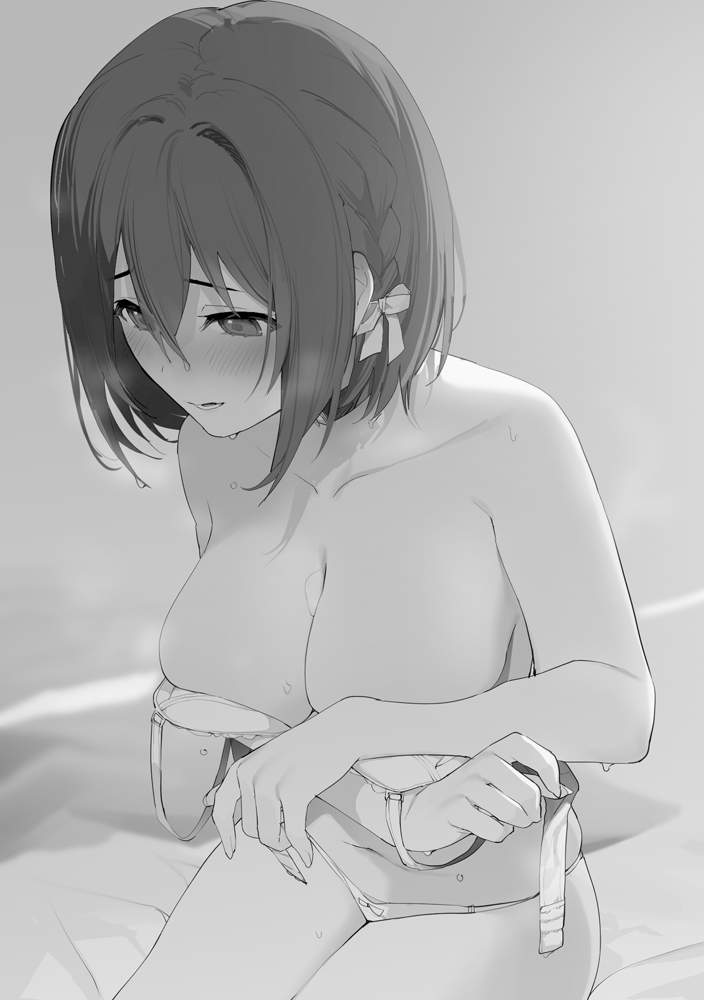
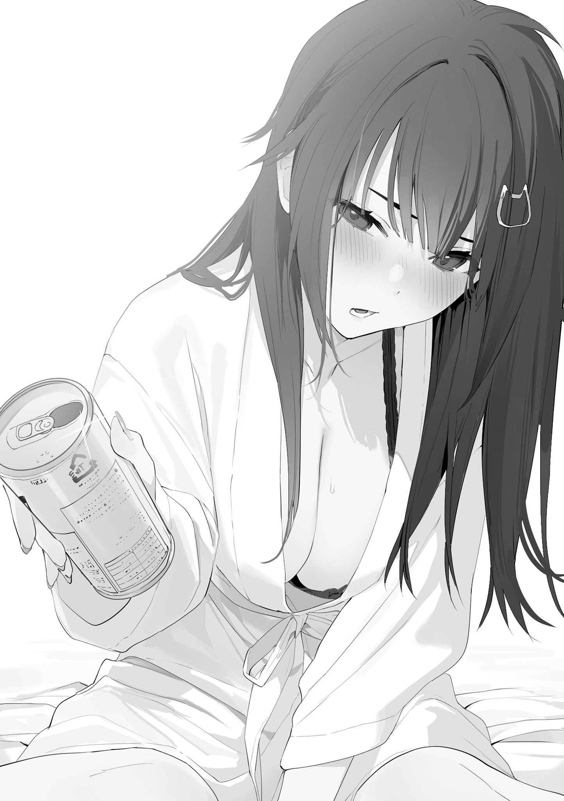
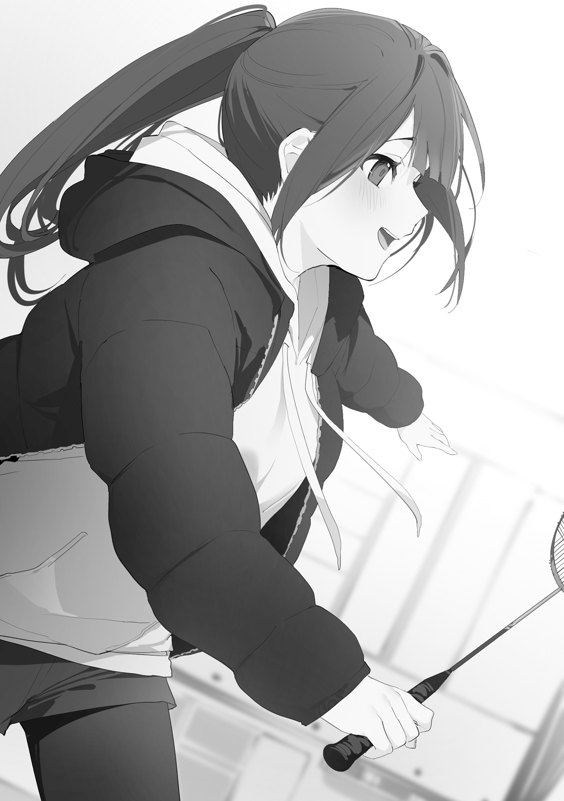

本電子書籍を示すサムネイルなどのイメージ画像は、再ダウンロード時に予告なく変更される場合があります。
本電子書籍は縦書きでレイアウトされています。
また、ご覧になるリーディングシステムにより、表示の差が認められることがあります。
第18話 全力彼氏生活
京都
とにかく築が古く、すきま風もびゅうびゅう吹く。
十一月も末となった今では、毎朝、寒さで目がさめる。せんべい
その日もそんな感じで朝の八時に起き、震えながら
大学の講義に出席するべく、部屋からでてヤマメ荘の自転車置き場に向かうと、
「おはようございます」
俺があいさつをすると、
「はて？ 俺はこのアパートの住人の顔を全て覚えていると思っていたが、申し訳ない、貴君はどの部屋の住人だったか……」
「お気になさらず。急いでいるので失礼します」
俺はそういうと自転車にまたがり、ヤマメ荘を出発する。
冬の朝の澄んだ空気のなか自転車を走らせ、
ほどなくして大学に着き、講義の五分前には着席することができた。
となりには先に出発していた
ほどなくして教授が講堂に入ってくる。
「
すぐに俺の服のポケットに入っていたスマホが震えた。
『講義はじまってるよ～。ノートはとってるから、もし体調がわるかったりしたらムリしないでね～』
そんなメッセージがとなりにいる
俺はなにくわぬ顔で講義を受けた。そのまま二限目も受け、昼は学食で素うどんを食べ、午後の講義にも全て出席した。その日の講義が終わったときにはすっかり夕方になっていた。
くされ大学生として授業をサボりまくっていたくせに、最近になって突然難しい勉強をいっぱいしているものだから、俺の頭は熱を持ってぐるぐるしている。
その場で倒れて気絶したいところだけど、約束があるため、俺はバスに乗って
ダークグレーのチェックのコートに、差し色になっている薄いグリーンのマフラー。
つん、とした顔でスマホをいじっている。
ルックス
「お待たせ」
しかし、
「おい、待て、俺だ。
立ちどまり、首をかしげながら俺の顔をみる
数秒して、ついに俺の顔を認識する。
「きりしまっ！」
「着流し着てないから、全然わからなかった」
そうなのだ。
今日の俺は
そのせいで、
俺を一体なにで認識しているんだという感じだが、人間そんなものなのだろう。
「なかなか似合って──」
「うわぁぁぁぁっ、うわあぁぁぁっ」
そして俺が着ているコートの袖をつかんでいう。
「これ、うちがあげたやつばい！」
俺は
「うんうん、やっぱ
「俺って気づいてなかったけどな」
「
「いこう。晩飯、一緒に食べるんだろ」
「うん」
「なに食べるんだ？」
「お好み焼き。せっかく関西にいるから、つくれるようになりたいんだよね！」
ただプレゼントされた服を着ただけ。
それだけで、こんなにも誰かを喜ばせることができるのだから、とても素敵なことだ。
「きっりしま、きっりしま」
はしゃぐ
店員さんに、「焼きましょうか？」ときかれ、
「なんでも挑戦することが大事だもん！」
そういって四人掛けのテーブルで、俺ととなりあって座る。
「……おい」
「豚玉が定番なのかな？ もちチーズもおいしそう。あとスペシャルミックスと──」
「普通、向かいあって座るだろ」
「一杯だけ飲んでいい？ いいよね、大学生なんだし」
「この座り方、痛いカップルのそれだからな」
「私はビール一杯なら酔ったりしないもんね～。九州の女はお酒に強いんだよ～」
「話きいてる？」
「すいませ～ん、注文いいですか～？」
「
「しっかり酔ってんじゃねえか～！」
ビール一杯で
「きりひま」
帰り道、
「酒に強い九州女はどこいった」
「だって～きりひまがいるとなんか安心しちゃうんだもん～」
酔い覚ましに
「これもあれだからな、痛いカップルがやるやつだからな」
「……きりひま」
「え、それしかいえない感じ？」
語彙を失った
玄関を入ると、
「ただいま」
俺がいうと、「えへへ」と照れたように笑う。
寝る支度をしているあいだ、
俺がシャワーを浴びて、胸にハートをあしらったおそろいのパジャマを着て部屋に戻ると、
「
そういって持ってきたマグカップは色ちがいのペアだった。
「やりすぎじゃないかな～」
「そんなことなか。ふたりは仲良し！」
「じゃ、寝るか」
「うん！」
「ホントに、一緒に寝るだけだからな」
うん、と
「
洗面台のスタンドに、
「あれみてるだけで
そういって、足をかけてきたり、頭をぼんぼんぶつけてきたりする。
しばらくじゃれあったところで、
「……眠くなってきた」
「寝よう。早寝早起きは大事だぞ」
「……うん」
ふたりでそのまま寝ようとしたところで──。
「どうしたの？」
「ちょっとだけ待ってくれ、すぐ済む」
俺はいったんベッドからでて、カバンからスマホを二台取りだしてまた戻ってくる。
まず一台目を操作して、通話アプリの発信ボタンを押す。
『
スマホの向こうから
『もしかしてもう寝るところ？』
「ああ」
『じゃあ、私も寝よっかな』
「いいのか？」
『うん。もう寝る準備も済んでるし、課題も今終わらせたから』
ぱたん、とノートパソコンを閉じる音がする。そしてごそごそと
ふわふわのパジャマ姿でベッドに入る
『よいしょ、っと』
声が突然近くなる。スマホを枕のすぐそばに置いたのだろう。スピーカーから吐息が伝わってくるようだった。
『えへへ、じゃあ、寝よっか』
「ああ、おやすみ」
『おやすみ』
スマホは通話状態のままにする。
つづいて俺はもう一台のスマホを操作して、発信ボタンを押す。
『
そっちのスマホからは
「なにしてた？」
『ピアノの楽譜読みこんでた』
「ゲームの音きこえるけど？」
『なんのこと？』
『もしかして
「ああ」
『じゃあ、私も寝る』
ゲームの音が途切れる。つづいて、ぱたぱたと歩く音。
ちょっとして、
『おやすみ、
「ああ、おやすみ」
しばらくして、寝息がきこえてくる。
そうして──。
俺はくっついてくる
◇
「頭ぶっ壊れそう!!」
「え？ じゃあ、ラブホの前でわちゃわちゃやって、結局、三人とも彼女にしたんですか？」
「そうしないと収拾つかなかったからな」
「今も全然、収拾ついてないですけど!?」
「いや、ヤバいですって。すぐに破綻して大変なことになりますよ」
「そうならないために、いくつかルールをつくった」
「またルール!!」
「いつもそれで失敗してるじゃないですか！ 無理です！ 学ばない人類！」
「否定や批判から入るのは簡単だ。でも人生を前に進め、なにかを成すために必要なことは前向きな心と、受け入れる
「
それより、と
「ここ、どこ!? 山なんですけど!!」
そのとおりだった。
俺たちは山にきていた。午前中の講義にでたあと、午後の講義がなかったから、キャンパス内を歩いている
「どこかときかれれば、
「そういう話をしてるんじゃないんです！」
「なんで山なんかに登ってるのか、ってきいてるんです！」
「それについてだが──」
「あとなんですか、その格好！ 前よりパーツ増えてるんですけど！」
俺は今、
「これは、
俺はもう一度いう。
「
「それって、
代表的な句として、『分け入つても分け入つても青い山』というものがある。
「え？ つまり
「あの句には前段がある」
「すでにいいたいことは山ほどありますが、いったん、ききましょう」
「『大正十五年四月、解くすべもない惑ひを背負うて、
「なるほど、それがどうこの登山につながってくるのでしょうか」
「
「そうですね。出口戦略は大事ですからね」
「そこで俺はこうこたえるのだ」
俺は
「──大学二回生の冬、
「うるせ～!!」
「そのセリフいうためだけに私に登山をさせるな～!!」
「いや、おっしゃるとおり」
「え、それよりちょっと待ってください」
「今、解きようのない惑ひのなかにいるっていいましたよね？ それってストレートにいうと、
「一気にしゃべるじゃん」
俺は
「この状況をどうすればいいか、考えがないわけではないんだ」
俺はいう。
「でも、まずは彼女たちの気持ちを受け止めたい」
もちろん、別の判断だってありうることはわかっている。
いつもそれで失敗してるじゃないか。やり方を変えるべきだろう、と。
でもそれはやっぱりピッチの外、テレビの前で試合を
実際にピッチに立って試合の当事者になれば、みえる景色はちがう。
そこにあるのはリアルな主観の感情だ。
もちろん、ピッチのなかにいながら、外からみたときと同じ考え方をするやり方はある。
鳥の視点、
俺もそれをやろうとすることはある。
でも──。
恋愛においてそれをするかといわれると、本気で愛し愛されるという場面でそうすべきかというと、きっとそうじゃない。一時の感情が真実になりえる局面で、それは説得力を失う。
なにより俺はとてもじゃないけど、冷静な顔はできない。
なぜなら──。
「俺は
「その背中を、俺は忘れることができない」
「
「今の
「
「気持ちはわかりますが──」
「まあ、物事の本質はプロセスですからね。恋の結論がどうあれ、一度、
そのとおりだった。
また、いつものように失敗するかもしれない。
しかし結論が同じであったとしても、そのプロセスが大事なのだ。人生の結論が死しかなくても、生きることに意味があるように。
「わかりました。私もそこは支持しましょう。失敗を積み重ねた末、その最後に成功があるかもしれませんし」
「ああ。とりあえずがんばってみるよ。恋人いっぱい全力彼氏生活」
「言葉にするとホントにろくでもないですね！」
なんてやりとりをしているうちに、
『
どうしたんだ、と俺はきく。
『私ね、土曜日空いてるんだ。だからさ、一日デートしたいなって思って……ダメ？』
「いいぞ」
『やった！』
「ずいぶん甘やかすんですね」
「俺に拒否権はないんだ」
「え、またルールつくってるんですか？ それ、いつもの『私たちのいうことは絶対！』ってやつですよね。今回もあるんですか!?」
「ああ」
「己の決定権をたやすく他人に
ていうか、と
「
「今のところ問題はなさそうだ」
「ホントですか？」
なんてやりとりをしていると、スマホがまた震える。着信だ。画面には、『
「
『うん。私とは全然そういうことしないのに
「ほら、怒ってる！
『土曜日、デートしたいなって』
「ぶつけてきた～!!」
「いや、その日はちょっと用事があるんだ」
『どんな用事？』
「
『そうなんだ。でも私もその日にデートしたいんだよね』
「口調はにこやかだけど、まったく引く気配がない！」
「そうだな。そういうことなら、なんとかしないとな」
「変なところでポジティブ！」
『ちゃんと、ふたりきりでデートしたいんだよね。丸一日』
「さらに無理難題ふっかけてきた！」
「──なかなか難しいな」
「
『そうだよね。難しいよね。でもさ』
『
「絶対」
ということで、
「アホ～！」
さっきからこまめに合いの手を入れていた
「今すぐそのルールを撤廃しろ～！ その、いうことは絶対ってやつ！ ろくなことにならないから！」
なんて
「どうかした？」
『うん、女の子とヤりまくり
「火の玉ストレート!!」
『土曜日、デートしたいんだよね。ふたりきりで、丸一日』
「つぶしにきてます！ この女たち、
「わかった、なんとかしよう」
「トリプルブッキング！ きいたことない！」
『楽しみにしてるね』
ということで
俺はスマホを
「
「正気!?」
「全力彼氏として、三人を満足させるデートをする」
「物理的に不可能では!?」
「どこにいこうかな」
俺は登山道をくだりはじめる。
「あ、こら、
「
「おい、
◇
迎えた土曜日、俺はまたもや洋服でヤマメ荘をでた。和服のオプションもあるといったが、三人とも拒否した。
自転車で京都の街中にゆき、駐輪場に自転車を
俺のスマホにポコンとメッセージが届く。
『私もう着いてるよ～』
みれば
『ねえ、まだ？』
『なにかあった？』
『大丈夫？』
『もしかして、私とデートしたくなかった？』
『ごめん、ごめん』
『もうわがままいわないから～』
俺はテラス席に近づいていって、そんな
「
ぱっと顔を明るくする
「そういうとこだぞ～」
「なんのことかようわからんばい」
「
「なんか
「
全力彼氏生活にあたって、俺は完全に無策というわけではない。
彼女たちの気持ちを受け止めながらも、当然、この状況の解決を意識している。
なかでも
だから
そして教育しなければいけない場面がさっそく訪れた。
「ちょっと買い物したい」
ブランドものの財布やパスケースがならんでいるコーナーをみてまわり、やがて革のキーケースを手に取った。
「これかな」
「ん？ 紳士もの使うのか？」
「
「おい～!!」
俺は
「しっかりした女の子はむやみやたらに、男に物買って与えたりしないの！」
「でも～！ でも～！」
「そういうのは自分で買わさないとダメ！」
「自分で買わす……あ、わかった！」
「
「発想力すごいな！」
俺は根気強く
「男に高いものプレゼントしちゃダメだから。それをしないで離れていく男は最初からろくでもないやつだし、高いプレゼント平気な顔で受け取るのもたいがいだから。わかった？」
「わかったばい」
そして俺は自腹で
「じゃあ、どこいこっか？」
「最近、つかれてないか？」
「え？」
「
「うん、なんか──」
「凝ってるような気がしてきた！」
「だろ？ ということで」
俺が
ヘッドスパ専門店だった。
店に入った瞬間から、リラックスを促すアロマの香りがする。個室でヘッドスパとヘッドマッサージ、肩のほぐしもやってくれる店だ。
「
「ああ。お互いほくほくにリフレッシュした状態でまた会おう」
ここからが俺の戦いだった。
◇
「待った？」
「五分くらい」
「ごめん」
「いいよ」
相変わらずクールだけれど、その落ち着きのなかに深い愛情があることが、ポケットのなかの握った手から伝わってくる。
自転車を
冬の街を
本当は、俺と
「今日は動物とふれあえるところにいこうと思うんだ」
なんともなしに俺はいう。
「最近、動物園によくいくっていってただろ」
でも
「え、なに？ 動物園いきまくってるっていってたよな？」
「うん……まあ、とても頻繁にいってはいる」
「そのリアクション……まさか講義さぼるのにちょうどいい場所が動物園ってこと？ 大学の近くにあるから？」
「私、動物好きだよ」
あくまで動物が好きというスタンスをアピールするので、当初の予定どおり猫カフェにいった。
「うん、わるくない」
時折、沈黙の時間があった。
特になにかいう必要はなかった。俺と
そんなことを考えながら、カップのなかのコーヒーをみつめていた。
ふと、顔をあげる。そして、俺は驚く。
「え、なにそれ」
「なんか、いっぱい寄ってくる」
「俺のとこにはこないんだけど」
「一匹渡そうか？」

結局、猫たちは
「これ……けっこういいかも……」
毛玉たちにかこまれて
「
猫で幸せトリップしている
息を切らしながら顔をあげれば、キャメルのダッフルコートを着た、かわいらしい女の子が俺を待っていた。
◇
薄暗い空間、青く輝く水槽のなかを白いクラゲが漂っている。
「なんだか
「ごめん、待たせてしまったよな」
「ううん、たった十五分だもん」
「
「水族館でよかったのか？」
「どうして？」
「
「海はあるけど、クラゲをこんなふうにみれるわけじゃないし」
それにさ、と
「結局、デートなんてどこでもいいんだよ」
「えぇ～」
「好きな人と同じ時間に同じ場所で、同じことをして過ごすのがいいんだから。ま、誰かさんは遅れてきたけどさ」
「面目ない……」
「いこ！」
土産物売り場では、
「えへへ、ありがと」
「でもよかったの？
「最近は稼いでいる」
「バイト？」
「すっぽんだ」
「すっぽん？」
「すっぽんをつかまえて、大学構内で売りさばいている。
「…………」
水族館をでたあと、
それで俺がドラッグストアに連れていってあげると、あれもいいな、これも試してみようかな、と化粧品売り場で真剣な顔で考えはじめた。女の子が化粧品を選ぶとき、めちゃくちゃ時間がかかることを俺は知っている。
「
「大丈夫だ、俺のことは気にしないでくれ」
俺はドラッグストアをでると、また走りだした。
ヘッドスパの専門店に駆けこむと、ちょうど
「気持ちよかった～」
ほくほくになった
「あれ？
「いや、そんなことはない……俺も、ほくほくだ！」
ここからの俺は大車輪の活躍だった。
映画を
困ったのはお昼ご飯のときだ。
「オムライスの有名な洋食屋さんがあるんだよ～」
そのあと
「ソースついてる」
「あ、ああ」
「お昼、焼き肉にしよっか」
「京都のおばんざいの店にいこうっていってなかった!? すっきりした和食が食べたいって」
「焼き肉いこう」
ゆずらない
「全然待ってないよ。三十分くらい」
「焼き肉って、匂い残るよね」
「さっき焼き肉店の前をとおったときかな？」
「お昼はかつ丼にしよっか」
俺はかつ丼も食べた。
そんな感じでぐるぐるやっていたわけだが、お昼を食べすぎて動きがにぶったせいか、はたまた三人と一日中ふたりきりでデートするというコンセプトに無理があったか、スケジュールは後ろに押しまくり、夕方になるころには女子たちから不満の声があがりはじめた。
「
涙目ですがりついてくる
「
口をとがらせる
「もしかして
爆発三秒前といった空気の
かなりピンチな状況だ。でも、俺は全力彼氏としてやり遂げなければいけない。
しかしどうやって？ いろいろ考えていたそのときだった。
「仕方がないなあ」
「楽しみにしてたからさ。ちょっと読書していい？」
その書店にはカフェも併設されている。
「あそこで読んでるね。そのあいだ
「
「一冊読み終わるまでには戻ってきてよね。それで晩ご飯はちゃんと一緒に食べよ？」
「ああ」
俺はこの無理難題と思われたトリプルブッキングデートを成功させるべく、京の街へと躍りでた。
◇
「もうマッサージいらない！ 体軽くなりすぎてどこもわるいとこない！」
整体の店に迎えにいったところ、健康になりすぎた
このトリプルブッキングにおいて、個別にサービスを受けるマッサージ系はこっそり席を外すのに都合がいい。それゆえ、ヘッドスパだけでなく整体やら
「もう
「
「いかない！ どうせ私をひとりにするんでしょ！ やだ！」
「
「うん……」
そこで
「わかった！ 私がそれを買ってあげればいいんだ！」
「ちがうって」
俺は、マッサージを受けすぎて肌がつるつるになっている
「今回は、俺にプレゼントさせてくれ」
向かったのは少し高級なお箸を販売しているお店だった。細工が精巧で、塗りがきれいなオーダーメイドのお箸もつくっている。
箸は事前に注文しておいた。
「プレゼントだから
店員さんから受け取った紙袋を、
「あけていい？」
「もちろん」
どちらかというと京都の観光にきた外国人向けの商品だったりする。でも
「うわあぁあ、うわぁぁぁ！」
と、感激の声をあげてくれた。
「
おそろい大好きの
それから俺は、るんるんになった
「私、
「ああ。期待しているぞ」
そして俺はまた京の街へと舞い戻るのだった。
◇

「動物は好きだけど、周りがみえなくなるほどじゃないよ」
息を切らして戻ってきた俺をみて、
「動物園だって、講義さぼるときにちょうどいい場所だからいってるだけだし」
「うん、それは知ってる」
ハリネズミは小さな手で
「お前はいい子ね。誰かさんとちがって、ちゃんと私と遊んでくれるもんね」
「……その、ごめん」
「今日はもうこの子たちと遊んでよっかな」
俺が席を外しまくったわけだけど、
ただ、そのクールな横顔がとても寂しそうだった。
だから、俺はカバンからケースを取りだし、そのケースのなかに入っていたメガネをかける。
「どうだろうか」
俺がきくと、
「いこっか」
「やっと
それから俺たちは晩ご飯を一緒に食べ、京都駅まで
文化祭シーズンも終わり、きっと、もう
「じゃあね」
改札の前まできたところで、
「新幹線のところまで一緒にいくよ」
俺は生まれて初めてホームへの入場券を買った。入場券のボタンは券売機のボタンのなかでも外れたところにあった。どこにも向かわない、人を見送るためだけの切符。
ホームのベンチに横並びで座りながら新幹線を待っているとき、俺はなんともなしにいった。
「
「うん」
「いいたいことがないわけじゃないけど」
「今日はありがとう」
そういって新幹線のなかから手を差しだしてくる。俺はその少し冷たい手を握って、握手をした。
発車のベルが鳴って、俺は手を離して車両から一歩さがる。
「
「次は引っ張りこむから」
そういって少しだけ笑うのだった。
俺は新幹線がみえなくなるまで、ホームに立って見送った。
──次は引っ張りこむから。
冗談めかしていたけれど、手を握ったとき、
でも今はそれより──。
俺は急いで京都駅からでて、大型書店へと向かう。
店内に駆けこむと、すでに閉店
最後のひとりの客として、
テーブルの上の小説は三冊になっていた。
ごめん、と俺がいうよりも先に、
「一緒にいるのがデートっていったけどさ」
「待ってる時間もデートのうち、っていう名言もあった気がする」
◇
国道沿いの夜の風景が、前から後ろに流れていく。
海辺の街へ向かっていた。
俺はこの全力彼氏生活のなかで、
「ちょっと寄るね。私、なにも食べてないからさ」
俺と
「
「ありがとう、助かるよ」
「晩ご飯、なに食べたの？」
「トンカツとちゃんこ鍋」
「そうしたくなる気持ちはわかる」
ほどなくしてラーメンがだされる。たくさんニラが載った台湾ラーメンだった。
「私ね、大学生になったらこういう店に恋人ときたいな、って思ってたんだ」
「そしてカウンターで一緒にラーメンを食べる」
「そういうこと」
俺は少し考えたあと、
「無理しなくてもいいのに」
「無理ではない」
そういいながらも、俺が食べ終わったのは
それをみて
「バカ」
日付が変わる前に海の街についた。
俺たちは交互にシャワーを浴び、寝る準備を整えた。俺はお泊まり道具として持ってきたジャージに着替えた。
電気を消して、一緒にベッドに入る。枕元に置かれたリモコンで暖房を切ると、部屋はいっきに寒くなった。でも、そのぶん
「
「大丈夫だ」
冬の夜、小さなベッドで体を寄せあう。互いを温めるように、俺たちは抱きあった。そうしていると、やっぱり
湿った吐息が、俺の胸にあたって熱がこもる。
えへへ、と顔をあげて笑う
でもそんな冗談めかしたことも、互いの体の近さを再認識することにしかならなかった。
俺が強く抱きしめると、
手を背中の輪郭に沿って滑らせる。なめらかな曲線、そこから腰、下着の浮いたライン、太もも。
「
頰に張りついた細い髪、どこか不安げな眉、涙をためたような瞳、くちびる。
俺の胸の奥にある、十七歳のときの、この女の子が愛おしいという気持ちがとめどなくあふれてくる。
どちらともなく顔が近づいていく。
「これ以上はやめとこ」
そういって、
今回の全力彼氏生活にあたって、スキンシップの制約は存在しない。俺たちはもう大学生で、そのあたりは自由でいいんじゃない、という話になったのだ。
だから、俺は
「
「
おそろいのパジャマを着て、一緒に洗面台の前で歯を磨いているだけで、「幸せ～」と、にこにこして、へにゃ～っとなるのが
『
そう、いっていた。
俺にちゃんとした彼女がいる。
そこが、高校時代の共有関係との決定的なちがいだった。
そして、なにより
『こういうことしたいわけじゃない』
二番目彼女三人による共有をしたいわけじゃない。それが
そのことを
「私も
と、
「
そのくせ、と
「きっぱり
そこで
「
だからね、と
「もうちょっとだけこのままでいさせて。ちゃんと卒業するから。今度こそ、
大学二回生の冬。
解くすべもない惑ひのなかにいるのは俺だけではなかった。
第19話 天才軍師
結局のところ、正解、不正解というのは局所的で相対的な話でしかなかった。
それらはふたりに対して正解で誠実な行為ではあったわけだけど、
俺のなかの「惑ひ」は相対性のなかにあった。
そして
「
朝早くのことだ。俺たちは
しかし昨日の夜は久しぶりに時間があったので、一緒に食事をし、俺は

みれば、
「
「え、寒いんだけど」
「…………」
ベッドからずるずると引きずりだされた。
どうやら
「
ということで、
「おいっちにい、おいっちにい、もっと腕を振りましょう！」
背中をつんつん小突かれる。
「
「え？ 女子小学生より遅いペースですよ？」
「え？ ランニングどころか全力ダッシュしてるつもりなんだけど？」
俺が今走っている速度はだいたい一キロ八分くらいらしい。ちなみに
実際、
「ど～ん！」といってぶつかってきたり、「負荷をかけましょう！」と、後ろから抱きついてきたりする。
しばらくそんな感じで走ったところで自動販売機をみつけ、俺は立ちどまる。
「ちょっと休憩、なにか飲ませてくれ」
「
「
ぶつかられたり抱きつかれたりするたびに俺の体力は減っていったのだった。
俺は自動販売機でスポーツドリンクを買って飲む。
俺の健康のためというのは本当だろう。でもきっと、会う時間が少なくて、
「もうちょっと走るか」
「はい！」
俺たちは五キロほど走った。
しばらく熱いシャワーを浴びながら、互いの肌をさわりあった。でも──。
「ダメですダメです！」
「今日はこのあとおでかけしなくちゃいけないんですから！」
そのとおりだった。俺たちはいそいそと
「今日はがんばりましょうね」
「
◇
高校のころは農業学校で学び、大学に入ってからも講義にちゃんと出席し、日々の自学自習にも余念がない。また、よく実る稲を開発するという高い志も持っている。
明確な目標を持っている人間がそうであるように、
そんな
「
俺はいった。
押し入れで育てていた豆苗のおすそ分けを持っていったときのことだ。となりの部屋の扉を開くと、
「
「勉強のためにしているわけではないんだ」
「じゃあ、シンプルに健康のため？」
「いや──」
そこで
「
つまり、好きな女の子にアピールするために体を鍛えはじめたというのだ。
「僕は少しふっくらしているし」
「
「わかっている。でも、僕がやりたいんだ」
「彼女のとなりを、胸を張って歩けるようになりたいんだ。それに──」
「それに？」
「好きだから、努力したい。見た目に気をつかうことは軽薄なことだろうか？」
いや、と俺は首を横に振った。
「とても誠実なことだと思う」
ヤマメ荘は
「ジーパンのおしりのポケットにゲーテの格言集を入れておくのはどうか。インテリジェンスな魅力に
「いや、スキットルだ。あの銀色の缶にバーボンを入れて持ち歩き、おもむろに飲みだせばそのハードボイルドさにハートが撃ち抜かれることうけあいだ」
「
そんなある夜、
「セ、センスがない……」
シンプルかつ素朴な反応にヤマメ荘の住人たちは恥じ入った。
「こんなもん
その一、美容院で髪を切る。
その二、眉毛を整える。（サロン、もしくは私がやります！）
その三、背すじを伸ばしてあるく。（猫背厳禁！）
「めちゃくちゃ普通だ……」
ヤマメ荘の住人たちがそういうと、「普通でいいんです！」と、
「
「すまん、なんだか面白かったのだ」
次に
「
口をとがらせていう
「
俺は、大学祭のシーズン、風邪で寝こんでしまったときに、お見舞いにきた
『
俺にそんなつもりはなかった。でも、客観的にみれば、おそらくそうみえただろう。あのとき俺のなかにあったのは、きっと
でも──。
俺はあらためて
「服も大事かもしれない」
俺はいった。
「
「たしかに！」
と、
「しかし、どうしましょうかね。服を選ぶにはセンスが必要です」
「仕方がないな。ここはいいだしっぺの俺がひと肌脱ぐしかないか」
「私も女の子の服はちゃんとチェックしてますが、男の人のデートの服となると自信がないですね」
「よしっ、はっ、ほっ」
「誰かいらっしゃいませんかねえ、センスのある人。どこにもみあたりませんね～」
おかしそうに笑う
まあ、俺のバンカラなスタイルは着こなしのテクニックも必要だから、おしゃれに目覚めたばかりの
「わかった。そういうことなら、うまくまとめてくれそうな
ということが数日前にあり──。
俺は
たしかに
三人で、道端で待つ。ゆきかう人々。観光客に恋人たち。
「たい焼き食べてもいいですよね？」
隙あらばあんこを食べようとする
服を選ぶために呼んだ
デニムにブルゾンというカジュアルな格好ながら、色づかいが鮮やかで、とてもおしゃれにみえる。その
「わ、わ、わ、私を便利に使うんじゃない～!!」
◇
「なんで私が～!! なんで私が～!!」
通りを歩きながら、
「このあいだは意味もなく山に連れていかれたし！ 私を巻きこむんじゃない、バカ！」
といいつつ今回もきてくれるのだから、
「
俺は不服そうな顔をしている
「ほら、やっぱおしゃれといったら
「高校のころから髪型とかカバンとかセンスあっただろ」
「俺の学年のやつらもよくいってたな。あの後輩の子、すごくおしゃれ、って」
「他人をコーディネートするとなると、なんていうの、生半可なおしゃれじゃなくて、やっぱ、みんなが認めるくらいのファッションセンスのある人に頼みたいだろ？」
「そういう人、
ついに頭の上のアホ毛も立つ。
「ま、まあ、私ほどおしゃれな女子はなかなかいませんし、生まれ持った抜群のセンスも考えると、
「めっちゃ早口でしゃべるじゃん」
「わかりました。いいでしょう。ここは
すっかり機嫌をよくしたチョロい
「やっぱバッシュですよね、一番かっこいいです」
「これなんかどうです？ 超かっこいいですよ！」
「ぴぴ～っ！」
「え？ ダメ？」
「ダメです」
「
「なるほど」
「はい、じゃあ次は
「いえ、逆に期待どおりですけどね。そうです、男の子はだいたいそこでつまずくんです。ごてごてして、派手であればいいという小学生男子の発想から卒業できてないんです。ここにかかとの光る靴があれば先輩は迷わずそれを指さしたことでしょう」
「くそ～、不正解だったか～」
「はい、それでは
「正解！」
「そうです、そうなんです。最初はベーシックな白でいいんです。これを選べるか選べないかで変わってくるんです。これは大いなる一歩ですよ。靴は体の一番下にくるものですからね。ベーシックにしておけば、選べる服の幅も広がるんです！」
「ちょっと地味すぎる気がするけどなあ～」
「
そのあとも、スタイリストと化した
日が傾くころには、
「なんだか、自分じゃないみたいだ」
「すごいです！ ヤマメ荘の住人とは思えません！」
感激する
「すんなりできあがったな。もっとてんやわんやするかと思ったが」
「時間をかければよくなるというものでもありません。私には最初からこの完成イメージがみえていましたしね」
そんな感じで用も済んだので、せっかくだからと京の街中をぶらぶらと歩き、店先をのぞいたり、
そうして
「これを
そういって、手渡される。布をといてみれば、
「これは一体……」
「
俺は今、
「ヤマメ荘の着流しを受け継ぐものはみななにか楽器ができ、いつでもそれを
「そのとおりだ」
「だから新しい
俺は笛の表面を指でなでる。とても
「この笛を『
「ああ。
「しかし、どうして。高かっただろうに」
「お礼だよ」
「いつも
となりにいる
「この笛はそんな
「僕たちからの親愛の
「ありがとう。そこで少し吹いてから帰るよ」
「
僕は先に戻って魚を焼く準備をしておくね、と
俺は
「吹かないんですか？」
一緒についてきた
風が吹き、草木がゆれる。
「俺にこの笛を吹く資格があるだろうか」
俺は笛を眺めながらいう。
「たしかに今日の俺は友情に値したろう。
「コーディネートしたのは私ですけどね」
「しかし俺の心は、やはり惑いのなかにいたのだ」
俺が
でも、その表情の下に短い言葉では表現できない感情があることも知っている。
「俺はそんな
「ふたりとも、楽しそうでしたね」
そのとおりだった。
「
「ああ。温かい好意を日々感じている」
「ふたりを裏切れるんですか？」
俺は首を横に振った。
「そうですか」
「
「そうだろうな」
ふたりともあのころより大人になっていて、
つまりは迷い。
なるほど、と
「みんながみんな、
「そうだな。俺も薄々はわかっている」
「ソフトランディングだ」
いった瞬間、「その言葉を使うのはやめましょう！」と
「なんで？」
「いえ、そうなんですよ？
でも、と
「高校のときに失敗した
「しかしいきなりテンションあげてくるな～」
「私の勘が、ここが勝負どころだといってるんです。今までで一番丸く収まるビジョンがみえている状況なんです。なにせみんなが
そのとおりだった。
そしてそうなったとき、ヤマメ荘を中心とした人間関係は崩壊し、魚を焼く会はおこなわれなくなり、十年後、
でも──。
「
「俺たちはいろいろあって、恋のノスタルジーを引きずっているけど、まだ好きだけど、でもどうにもならないことはあるよね、みたいな、なんかエモい感じで三人の美女たちとセンチメンタルグッバイすればいいんです。芝居がかってる？ いいじゃないですか」
必要なのはエンドロールなんです、と
「恋を終わらせるためのせつないフィナーレがあれば、思い出にすることができるんです。そしてそれは
「いきなり早口になるじゃん」
「あなたたちをずっとみてきた私だからわかるんです。この状況から少しビターながらもハッピーエンドに持っていくのはこれしかありません」
「たしかに……そのとおりだ」
それは俺にもわかっていた。
今回、高校のときの共有と似たような状態になった。でも、その心情や態度は全然ちがっている。きっと俺たちはいつのまにか少し大人になっていたのだ。
そして時は待ってくれなくて、これからもっと大人になる。
大人になって仕事をはじめて、それから何年か
そんな未来につながるような、前向きな終わり方に持っていくためには、
それが、傷ついたりつらい瞬間はあるかもしれないけれど、誰も大きく損なわれたりはしない、この状況で考えられる唯一のハッピーエンドであるように思えた。
だから、俺はいう。
「やるしかないな、
「ええ。そして
「ああ、そうだ」
そして、
「
「……そうだな」
俺がいったところで、
「なんか返事のキレがわるくないですか？ まさか、ここまできて
「……もちろんだ」
そうだ。
「俺は
「俺が笛を吹き、となりで
「へっぽこ大学生ふたりを美化しすぎているきらいはありますが、まあそこまで大切に
「じゃあ、具体的にどうするかだが──」
俺がいいかけたところで、「待ってください」と
「今回、
「なぜ？」
「
「なにもいいかえせないな……しかしそれだと無策になってしまうが……」
「だから私が計画を立てます」
「
「
いつもツッコミにまわっていた
「山動く、というやつです」
そして、そこにはちゃんと
「なんやかんやで長い付きあい、私もみなさんには笑っていてほしいですからね。ここが最終局面、私の頭脳でみなさんをエモでビターなハッピーエンドに導いてさしあげましょう」
「俺には、最高の後輩がいたんだな……」
「気づくのが遅いですよ、
「それでは今後、
「ということは、策はあるんだな」
「あります」
名付けて──。
「『
◇
俺の部屋にはコタツがある。商店街の抽選で当たったのだ。このコタツで暖をとろうと、ヤマメ荘で寒さに震える住人たちが部屋の前に長蛇の列をなすこともある。
そんなコタツに、俺、
鍋をすることになり、
「京都の冬は寒いといいますが」
「北海道生まれの私にいわせれば、そんなにたいしたことはありません」
「そういうわりに俺が押しだされているのだが」
「それにしてもまさか
「コタツは正方形ですからね。私がいないとおさまりがわるいでしょう」
ひとつの辺にひとりずつ座って四人おさまるのが通常のコタツ理論だ。しかし
「
「なるほど～さすがです～」
『
過去の恋に未練があるなんてことを
『
それが
ちなみに
『そんなもんテキトーです。名前に意味なんてありません』
いずれにせよ、
夕方、
「
俺は
俺と
『わかってるよ』
と、いっているようだった。
でも、危ない瞬間はあった。
鍋を囲んでいたときのことだ。お酒を飲んでしまったことも影響しているだろう。
「シイタケまだ残ってるね。食べていいよ、
「昔からよく食べてたもんね～」
俺と
「シイタケ好きっていったのは私です！ 小さいころから大好きって話を
「ごめんごめん、そうだった。
一度だけ、
「大丈夫だよ」
冷蔵庫の前で、
「私が
コタツで俺と
鍋を食べ終わり、お酒を飲みながらだらだら会話する時間になる。
そんななか、
「今度、東京にいくんです」
バレーの遠征があるのだ。
「それで、
きかれて、「ああ」とこたえる。
「高校のときはこの電車に乗ってたのか～とか知りたいじゃないですか」
「僕も興味ある」
「高校生の
ふたりは俺たちが同じ高校に通っていたことを知らないのだ。
「
「はい。思い出のなかにおじゃましてきます」
そこで
「しかし、いいんですかね……」
「どうしたんだ、急に」
「私は
「この人、高校のときに大恋愛したらしいんですよ」
「へえ、そうなんだ……」
「詳しくは知りませんが、
俺は高校の一件があったあと、禁欲的な生活をつづけ、その影響から
そのことは
「大好きな人がいたのなら、その人との思い出の場所はとっておきたいとか……そういう気持ちがあるのではないでしょうか……」
その問いに対して、俺がこたえるよりも先に
「上書きしちゃえばいいよ」
口元にチューハイの缶を持ってきて、にっこり笑いながらいう。
「今、付きあってるのは
「で、ですよね！」
「
すると
「駅の近くにおいしいハンバーガーショップがあるからいったらいいんじゃないかな」
俺たちがよく食べにいっていた店。
「高校からは少し離れてるけど、紅茶のおいしい店もるよ」
学校帰りに落ちあうのに使っていた
「駅ビルもいろいろあって便利だよ」
よくデートに使っていた場所。
「全部、いってみたらいいよ。もし
そういったあとで、
と、思うが
「
「……ああ」
俺がうなずくと、
一方、
「
「……ああ」
「だよね。今いい彼女がいたら、過去の女の子なんてどうでもいいよね」
ここにきて俺に新しいプレッシャーのかけかた覚えたろ。
「高校のときに好きだった女の子なんてどうでもいいよね。今思うと、なんで好きだったんだろってくらい、たいしたことない女の子だよね。
ねえ、
「高校のときの女の子なんて、もう顔も忘れた、っていってみて」
「あの
「彼女だったらこのくらいしないと。私だったら絶対ちゃんと確認するもん」
「なるほど……そういうものなんですね」
変なこと学ばんでよろしい。
「ほら、
やめたほうがいいと思うなあ、そういうの！
しかし
「高校のときの女の子はもう顔も忘れたよ」
「どこでなにをしていても気にならない」
「どこでなにをしていても気にならない」
「もう会いたいとも思わない」
「もう会いたいとも思わない」
「最初から好きじゃなかった」
いや、さすがにそれはいってほしくないだろと思いつつ、
「……最初から好きじゃなかった」
瞬間、
そこからなにも起こらず数秒経過する。
俺はコタツ
「冗談、ちょっと遊んだだけ」
そして笑顔から力を抜き、ニュートラルな表情になって流し目で俺をみた。
『全部わかってるから。大丈夫だよ』
そういっているようで、そしてその瞳はほんの少しだけ寂しげであるようにもみえた。
秋の大学祭シーズン、
ふたりは和解しているから、表面上また仲良くしているが、
そして
その心配は過去にもおよび、部屋で一緒にいるときにふと、
「……
と、きいたと思ったら、すぐに両手を振って、
「いえ、いわなくて大丈夫です。知らないほうがいい気がしますし、
などといったりするのだ。
だから、今の
となりでにこにこしながら、東京にいったときにいく場所リストをスマホのメモアプリにつくっている
「さて、と」
「じゃあ私、お酒買ってこよっかな。なくなったみたいだし」
みればたしかに、用意したお酒が全部なくなっていた。今夜は
「ダメですよ、こんな夜遅くに
「
「勝ったほうが？ 普通負けたやつが買いにいくんじゃないのか？」
俺がツッコミをいれると、いえいえ、と
「
「しかし将棋というのは悠長すぎやしないか。時間のかかるものだが──」
「別にいいよ」
立ちあがっていた
「どうせ今夜は
時間はあるから、というのだった。
そしてこうなるとまた別の文脈が発生する。
「じゃあ、やろっか」
そういう
俺には
◇
将棋盤を挟んで
「
「駒の動かしかたくらいかな」
「私と同じですね～」
俺はふたりにわかるように解説する。
「
しかし。
「あ、うん、
「私も早くお酒飲みたいです」
「めっちゃパリピみたいなこというじゃん」
実際、
そして将棋自体はさくさくと進行していく。
買いだしにいく人を決めるだけの勝負であるし、なによりこれは俺が負けるための戦いだからだ。
勝ったほうが
ここがトスのあげどころですよ、というメッセージ。
コタツ鍋の会を開催する数日前、
「
「こういう気持ちを隠して、友だちとしてとなりにいるのはなんだかフェアじゃない気がするんだ」
誠実な男の考え方だった。とてもまっすぐだ。
それに、と
「
気持ちを伝えることについて、
「鍋をする日の夜、もし機会があれば伝えるつもりだ」
そしてこの買いだしは絶好のタイミングだった。少しお酒に酔ったふたりが、コンビニに向かって夜道を歩く。冬の寒さも手伝って、雰囲気もある。星空もきれいだ。
俺が将棋の勝負にわざと負けて
いずれにせよ、試されているのは俺のスタンスだった。
正直にいってしまうと、俺の腕にはまだ高校のときに
でもそれは
俺は想像する。
海辺の街で
そんなことを考えているうちにも、将棋の局面はどんどん進行していく。駒を取りあい、互いの王将への道すじができはじめる。
結局のところ、これは俺の選択でしかなかった。
いくつかの思い出がフラッシュバックする。制服姿の
そして──。
俺は自ら王将を、
「
ありがとう。
「も～、私でもそんな駒の動かしかたしないよ～」
と笑っていた。そしてその笑顔の奥で、ずっと隠している彼女のやわらかい部分が深く傷ついたのがわかった。傷つけたのは俺だった。
「さてと、じゃあ
ふたりは部屋をでていった。
俺たちはコタツでミカンを食べながら
「うまくいくといいですね～」
と、
しばらくして
そして、照れくさそうにいった。
「
◇
そして帰り道、
シンプルに好きだということ、お付きあいしたいと思っていることを伝えたという。
「
「彼女は過去に好きだった人のことを、まだ『ほんのちょっとだけ』、引きずっているらしい。前を向かなければいけないことはわかっているんだけど、どうしても一歩を踏みだせないというんだ」
「少し前の
「だから僕は待たせてほしいといった。
謝ったのだという。
ごめんね、曖昧な態度で。
「謝る必要なんてなかった。僕はふられなかっただけでも、すごく
もちろん、そういう気持ちになれないかもしれない。だからいつでも、私のことを好きじゃなくなってもいい、と
「僕はずっと待つといった」
そこで
「とても恥ずかしいんだけれど、ラブソングの歌詞みたいな気分になってる。昔の恋を忘れさせたいって、そんな感じだ。いや……やっぱ今いったことは忘れてほしいかも……」
「なにはともあれ前向きな感じでよかったです！」
おつかれさまです、と
みんなでミカンを食べていると、しばらく
「そういうことになったから」
といって、コタツに入ってくる。
「別に変な気つかわなくていいからね。なにかあったらいうからさ」
そしてお酒の缶を持つと、プシュッと音を立ててあけ、ごくごくと飲みはじめる。
「よ～し、今夜は飲んじゃうぞ～」
「このままでいきましょう」
「なぜに」
「酔いつぶしてしまったほうが大人しくなって安全です」
というのでミカンを食べながら眺めていると、
そこでコタツ鍋の会はお開きとなった。
「
戻ってきて、ひと息つく。
「いかがでしょうか、私の策は」
「……驚くべきほどにはまっている。容赦はないが」
「いいんです。こうでもしないと収拾つかないんですから」
きっと、こうやっていくつかの気持ちを終わらせ、整理し、俺たちは未来に向かって前に進んでいくのだろう。
「少しビターな結末に向かってこの調子でいきましょう。
「俺は
なだらかな落としどころはそこしかない。俺もそれをよくわかっていて、
「これで私の価値がわかったでしょう」
「私はパーフェクトにやり遂げますからね。もうなんの心配もいらんのです」
第19・５話
「まったく仕方ありませんねえ」
あきらは背中で安らかな寝息を立てているあかねにいう。
「
そこであきらは、「あ」と声をあげる。
「私の肩によだれ垂らしましたね～も～」
そんなことをいいながら、自分の部屋の扉の鍵をあけ、なかに入っていく。そして寝ているあかねを自分のベッドにころんと転がした。
「本当にかわいらしい顔立ちですね」
あきらはベッドわきに座りこみ、あかねの白くやわらかい頰を指でつついたり、細くてつやのある前髪をさわったりする。
「このお顔でさぞたくさんの男の人たちをとりこにしてきたのでしょう」
あかねに起きる気配はない。
「今夜はありがとうございました。
あきらは少し笑っていう。
「
あきらはあかねの頰をつまんだりしながら、話しかける。
「それで、ちょっと不安になってたんです。過去に大恋愛した人ってどんな人だろ、その人のこと忘れてなかったらどうしよう、って。でも
弱気はダメですよね、とあきらはいう。
「さてと、これは朝まで起きないやつですね」
あきらは自分の寝る支度にとりかかろうとする。
しかし、ふと気づき、ぽつりとこぼす。
「そういえば
「でも
あきらはそこで、はっ、とした顔をする。
「もしかして……
なんてやっているときだった。
あかねが寝返りを打った。そして口元で、もごもごとなにかいっている。
「寝言ですか！ むにゃむにゃいって、どこまでもかわいい人ですね！」
あきらはにっこにこになって耳を近づける。
「
しかし、あきらの表情は一変する。
あかねが、寝言でいったからだ。
「
どうして
「ごめんね……
あかねの頰には、涙が伝っている。
あきらは、ただその涙をみつめつづけていた。
第20話 オブ・ザ・ベースボール
ある晴れた日の午後、みんなでユニフォームを着て野球をやっていた。野球とは九対九のチームに分かれ、ピッチャーがボールを投げ、バッターがバットという棒でボールを打ち、点数を競う、あのスポーツだ。
俺たちは高校球児でもないし、メジャーリーグを目指しているわけでもない。しかし、
「いくよ～」
マウンドに立った
ボールは山なりで、とても遅い。遅すぎて、空気抵抗のせいかぐらぐらゆれている。
「逆に打ちづらい！」
ひっかけたボールがぼてぼてのゴロとなって、サードを守る

「うん」
「しまっていこ～！」
後ろを守るナインに向かってかわいらしく両手をあげる
アウトになり、一塁ベースの先で悔しがっている
なぜ野球をやっているかというと、この試合が代々つづくヤマメ荘対
春に開催される
寒い夜に外を歩きたくないヤマメ荘の住人たちは絶対に負けたくない。しかし野球はスポーツであり、ヤマメ荘の住人たちにとって当然のごとく苦手分野であり、野球をするのに必要な人数が集まらなかった。
そして、このままでは不戦敗というところで、話をききつけた
「まさか、ここでも
「もちろんそれもあります。
「野球に勝つためです。これは負けられない戦いです」
「どうした、いきなり熱くなって」
「だってこれ、大学の代理戦争じゃないですか」
俺と
それに比べ、桜ハイツに住んでいる
「私は！」
「自分の通う大学が！ 勉強しかできない、白くてなよなよしたやつらが集まる大学っていうイメージを
「本当のことだろ」
「華やかな大学生活を送っている人間に我々が負けてはいかんのです！」
その発想がすでに俺たちの大学に染まっているのだが、まあいいやということで
試合前の練習で、誰よりもボールをキャッチし、バットにもボールをあてた
しかし
「いいバッテリーですね。プロはどうするんですか？」
「俺が付きあえるのは草野球までだよ」
そして
「えい！」
と、内またになりながらボールを投げれば、桜ハイツの男のバッターたちは露出した白い太ももと、男もののユニフォームゆえに窮屈そうな胸元に視線がいってしまい、ボールなんてみえていないのだった。
そんな感じで試合がはじまり、初回をしっかり無失点で抑え、二回表、チーム桜ハイツの攻撃、四番でピッチャーの
「いいですよ！ その調子でいきましょう！」
次のバッターは
「ホームラン打つからね～」
右バッターボックスに立つが、手の位置が逆で左打ちの持ちかたになっている。それが逆によかったのか、
しかしスイングにもボールにも勢いがないため、そんなに遠くには飛ばない。一塁を守る俺の頭上に平凡なフライがあがる。
青空を背景に、落ちてくる白い球。
「オーライ、オーライ」
俺は空をみあげながら、落下点に入る。
「オーライ、オーライ、オーライ」
白いボールが落ちてくる。
「
走ってくる
「わるいが冬の夜にカンカン鳴らしながら歩きまわるのはいやなんだ」
俺はグラブを構える。しかし──。
ボールが落ちたのは俺がいたところより四、五メートルも横だった。そのあいだに
フィールドに転がったボールを
「
笑顔の
「切り替えてこっ」
グラブを
ふたりとも負けず嫌いな性格に火がついてるっぽい。
「ヒット打ったばい」
「
「いっておくが
「私、野球の才能あるかも！」
そんなことをいうが、
守備は
「大丈夫です」
「あれだけとばしていればどこかでつかれがでるはずです。そこを仕留めればいいんです。
ほらみてください、と
四回裏のチームヤマメ荘の攻撃のときのことだ。バッターボックスには
マウンドに立つ
「体力が持つわけがありません。ここは夏の甲子園なんです」
「冬の
「一巡してみんなも
明らかにスピードがあがっていた。
「そんな、ここからさらにもう一段ギアがあがるなんて──」
結局、
「大きな胸がジャマをしてうまくバットを振れなかったってことにしときましょう！」
次のバッターの
「これはなにがあるかわかりませんよ」
「
そういう
そんな
「やっぱりストレートが速かった感じですか？」
「胸がジャマでうまくバットが振れなかった」
「…………」
「私も胸が大きいから、バットが振りづらい」
「どこで意地はっとんじゃ～!!」
「もっと勝負にこだわってるのかと思った」
俺がいうと、
「はやいな～」
「勝ちたいのは
そういう
「私が点をあげなきゃチームは負けないもん」
なんていっている。
ボールは遅いが、言動は完全にエースだ。
「
俺がいうと、「気づいてないの？」と
「
「え？」
「試合がはじまる前に、なんかやってたよ」
「
「
ふたりは、こんなやりとりをしていたらしい。
『
『ううん、こっちこそ泊めてくれてありがとう』
『それで……
『なにが？』
『私は現在の彼女なんだから、堂々としてればいいんだって。だって
『……そうなんだ』
『それに
『よかったね……じゃあ……もう安心だね』
◇
俺が前にでてそのボールを拾うと、
「ナイス連携プレーだね！」
「
そういって、俺の胸にもぽんぽんさわる。そしてダメ押しに、
「えへへ」
と、至近距離で笑うのだった。キャップをかぶってユニフォームを着た
俺が思わず目をそらすと、視線の先は一塁側の桜ハイツのベンチ、
なるほど、と思う。こういう
「この調子でいこう」
俺は
試合前からたしかに兆候はあった。キャッチボールのときも、ストレッチのときも
「東京遠征のときは、いろいろなところにいきましょうね。思い出いっぱいつくりましょう！」
なんていいながら、開脚している俺の背中にくっつきながらぐいぐい押していた。
『それに
もちろん俺はそんなこといっていない。
つまり、
しかもこれを
一体いつ？ どうやって？ 過去のことはコタツ鍋のときに乗り越えたのでは？
と思っていると、第二ラウンドがはじまる。
軽くツーベースというあたりだが、
「おい、二塁いけるぞ」
「いえ、無理です。二塁にいけばアウトになります」
「レフトの
「
まったくそんなことはないのだが、
ボールが戻ってきて、
一塁にランナーとして残っている
「クリスマスも一緒に過ごしましょうね～」
そういいながら、俺の帽子と自分の帽子を交換したり、後ろから目隠ししたりして、じゃれてくる。そのときだった。
バシーンと、俺のグラブが音を立てる。
「
「
「はい……」
「今夜は私が料理をつくります。
やさしい性格だから忘れがちだが、
そして
バッターはボールを打ちあげる。ファーストフライになるあたりだ。
今度こそ俺は落下地点に入る。落ちてくるボール。しっかりキャッチしようとして──。
横からの衝撃がきて、気づけば俺はグラウンドに仰向けで倒れていた。
「ごめん、ボール追いかけてたらぶつかっちゃった」
「大丈夫？
そういって、俺に乗ったままぺたぺたと体をさわってくる。
「大丈夫だ。それより……」
フィールドに落ちたボールは俺のすぐそばを転がっている。
「このままだと点が入って──」
「私、
俺の顔をのぞきこみ、密着してくる。ユニフォーム姿のかわいらしい
「ねえ、なんで顔赤いの？」
そこで
「高校のときの女の子じゃそういう気分にならないんでしょ？ 興奮しないんでしょ？」
「いや、それは──」
「
「めっちゃ根に持つじゃん！」
あと、それ俺いってないから！
なんてやっていると、サードから
「もう一点入っちゃったよ」
そういって
ホームインした
これをきっかけに、ふたりは試合をほっぽらかして別の対決をはじめる。
「
マウンドから、
「これはあれです、敵の一塁手にちょっかいをだして妨害することで、チームに貢献してるんです」
「
しかし、じゃれつく具合でいえば、やはり同じチームの
「
と、チームヤマメ荘の攻撃中はずっと俺とキャッチボールをするし、肩の調子がわるいかもといって、一緒にストレッチしようと声をかけてくる。
俺たちはふたり一組になってストレッチをする。両手をつないで頭の上でひっっぱりあったり、背中をあわせて相手を持ちあげたりするやつだ。
なにかとスキンシップをとってくる
「あ～あ、どうせ私とこういうことしてても、比べられてるんだろうなあ。
「え？
「でもなんで
どんどんヒートアップする
三対〇でチーム桜ハイツがリードする展開、八回裏、ヤマメ荘の攻撃中のときのことだ。
「ごめん」
突然、
「なんか、熱くなっちゃった」
「こんなことしても意味ないのにね」
「ホントは痛くもなんともないから」
「それはわかってたけどさ」
「挑発されたから、ちょっと意地になっちゃっただけ」
「
「
「まだ疑惑って感じだが」
もしかしたらどこかで俺が失言したのかもしれない。まさか
「
「それって……」
「うん、もう泊まりにこなくていい。『私たちのいうことは絶対』ってやつも使わない」
「
そこで
「でも、
「どうして？」
「だって、ふたりの気持ちに水差したくないもん」
「私はやめちゃうけど、
「わかった」
「今度は
「なにが？」
「もし私と
「そうなるな」
「いっぱい嫉妬してくれていいからね！」
「じゃあ、
相手ベンチに歩いていこうとする
でも背中を向けたあと、こちらを振り返っていった。
「私、もうマウンド降りるから」
「エースが降りるとチームが心配だな」
「大丈夫だよ」
「
◇
ヘルメットをかぶり、ネクストバッターズサークルで、素振りをする。
試合は九回裏まできていた。相変わらず三対〇でチーム桜ハイツがリードしている。
逆に、
四番の
え？ いきなりちゃんとした野球はじまるじゃん、って感じだが、六番、七番バッターはしっかり三振した。くるくるとバットが回る、見慣れた光景だった。
ツーアウト一塁、二塁でこのままゲームセットかと思われる展開。しかし八番バッターの、普段ラテン語ばかり勉強している住人が、インコースにボールがきたのをいいことに、こずるく自分からボールにあたりにいき、判定はデッドボール。
九回裏二死満塁、三点ビハインドという場面で、俺に打順がまわってくる。
俺は素振りをしてから、バッターボックスに入る。
「
ベンチから
「
そんなデータとれるほど野球やってないだろ、と思いつつバッターボックスに入り、ピッチャーに向かって構える。
一球目、真ん中高めのストレート、俺は空振り。二球目、三球目は手がでず見送ったらどっちもボール判定。ワンツーというバッティングカウント。
「
「スイングがなければ意味はない。スイングしろ」
デューク・エリントンのいったスイングは音楽のことで、野球のスイングではないんだけど、なんて思いながら振ったバットは空振り、ツーストライクに追いこまれる。
次の一球はアウトコースの
「舞台は整いました！ ドラマティック動きだします！ 三年間のつらい練習を思いだしてください。今、その努力が報われるときです！」
俺は高校球児じゃないし三年どころか三日も野球をしたことがないが、
「九回裏ツーアウト満塁、フルカウント！ たしかに相手のほうが地力にまさるんでしょう！ でも、タイムアウトのない試合の面白さってやつを、あいつらにわからせてやってください！」
草野球でめちゃくちゃ盛りあがるじゃん、って感じだが、ベンチのみんなが熱くなってるから俺もその気になってくる。
いったん打席を外して、息を整えて、またバッターボックスに入る。
バットを構えるが、ピッチャーも緊張しているようで、帽子を取ってユニフォームの袖で汗を拭いている。
そのとき、相手ベンチの後ろで、
そのとなりで
『仲直りしてくる』
大人だな、と思った。
時計の針は前に進んでいるのだ。以前ならできなかったことが、よくもわるくも、うまくできるようになっている。
きっと、俺たちはもうあの青く鋭い感性の時代にはいないのだ。突き刺す感情の季節は過ぎ去り、肌の熱さを忘れ、やがて穏やかな日々が訪れる。
もちろん、それはただ喜ばしいだけでなく、
でも、これでいいのだ。
二番目の彼女からおりるといったのだ。
こうやって、全てのことが終わっていくのだろう。思い出になっていくのだろう。
ピッチャーが投球動作に入る。
俺はバットを構える。
やがて訪れるビターエンド。
俺は子供みたいな願掛けをする。
もし、バットにあてることができたら──。
俺がバットにボールをあてることができたら、みんな幸せになれる。神様との約束だ。今この一瞬が少し苦くても、将来、みんな幸せになれる。
ツーアウトでフルカウントだからピッチャーは振りかぶるし、ランナーもスタートを切る。
俺は足をあげてタイミングをとる。
インコース高めのストレート。周囲の風景も、ボールも、なんだかはっきりとみえる。
いつか今日の日の写真を見返すときがくるのだろう。
きっとそのときは大人で、写真のなかにはユニフォーム姿のみんなが写っていて、こんなこともあったな、と
思い出は写真に残る。感情は移り変わっていく。
それぞれが別の場所で、その同じ写真を見返していたりするのだ。
時計の針とともに、俺たちは前に進んでいってしまうから。
俺は願う。
どうかみんなが幸せになれますように。
ボールがくる。スイングがなければ意味はない。
俺はバットを振る。そして祈る。
白球は、青い空に高く舞いあがった。
第20・５話
「わかってる。
小さな声で、自分にいいきかせるようにいう。
「大丈夫、ちゃんとできる。もう、できるから。私だって、
あかねはチーム桜ハイツのベンチまできたところで、帽子をかぶりなおす。そしてしれっとした顔で
「え、ちょ、
あきらは驚いて、うろたえる。
「あの、えっと、その……」
「マウンド降りたんだね」
「あ、はい」
「私も降りたからさ。一緒にみようよ」
あかねはあきらのとなりに立ち、九回裏、ヤマメ荘の最後の攻撃を見守る。あきらはなんとなく気まずそうな顔をしている。今日は練習のときからなにかと挑発してきたから、その相手が突然となりにきて、驚いているのだ。
でも、あきらはやがて意を決したように口を開いた。
「
そのときだった。
金属バットの音が響いた。
歓声がおさまったところで、あきらが言葉のつづきをいう前に、あかねはいった。
「
「え？」
「
「それは……」
でも、大丈夫だよ、とあかねはいう。
「
「選んだ……」
「
「そういう、ものなんですかね」
「うん。私が保証する。
そのとき、また歓声があがる。桜ハイツのピッチャーがバント処理をあやまり、ノーアウト一塁、二塁になったのだ。
はしゃぐヤマメ荘のベンチをみながら、あかねがいう。
「
「は、はいっ」
あきらもヤマメ荘のベンチをみながらいう。
「ヤマメ荘の人たちのいいところは、どんなことでも一生懸命なところです。スポーツの苦手な人たちが集まってるのに、いざ野球をするとなったら、お祭り気分でやっちゃうところが素晴らしいんです」
あかねとあきらは、しばらくそんなヤマメ荘の住人が盛りあがってプレーしているのを眺めた。やがて、あきらがぽつりという。
「ですよね、私が『彼女』ですもんね」
あきらの表情が明るくなる。
「そうでしたそうでした。よく考えたら、あんな着流しの変人を好きになるの、私くらいのものでした」
「ホントだよ。魚釣って、変な楽器弾いて」
私は最近、あの人のことがよくわかるんです、とあきらはいう。
「京都の街を歩いていても、この着物の柄好きそうだなとか、ここのカフェとか気に入るんじゃないかな、とか。それを
「さすがだね」
「秋だから
あきらは楽しそうに語る。
「そういうのが、全部わかるんです」
「よかったね」
「はい。いつも一緒にいるから……彼女だからわかるんです。きっと、そういうのがわかるから、相手を理解できるから、彼女なんだと思います」
「うん、そうだよ」
「なんだか元気になってきました！ そうです、私が彼女なんです。
そのときだった。
ヤマメ荘のベンチが一層の盛りあがりをみせる。八番バッターがデットボールで出塁して、ツーアウト満塁となったのだ。ホームランで逆転のチャンスだ。
「おやおや、なかなか粘りますね」
あきらはいう。
「私も冬の夜に火の用心といってまわるのはご勘弁いただきたいですからね。一回ぐらいなら楽しそうですが、毎夜となるとそんなもん寒いだけです」
そして、バッターボックスに
「
「え？」
「
「わかんないな～」
あかねはいう。
「ほら、野球は筋書きのないドラマでしょ？ だから、わからないものなんだよ。実況の
しかし、あきらは、「そこをなんとか」とつづける。
「あてずっぽうでもいいんで」
「え～」
「ちょっとした遊びみたいなものです」
あきらがそういうものだから、あかねは、「あくまで遊びだからね」と前置きしてからいった。
「
「え？」
そのときだった。
ストレートがミットを
「び、びっくりしました」
あきらがいう。
「
そして迎えたツーストライクスリーボールのフルカウント。
「打つよ」
あかねはグラウンドをみつめながらいう。
「
その瞬間だった。
金属バットがボールをとらえる甲高い音がして、白球が青空に舞いあがった。
白球はぐんぐん伸びて、きれいなアーチを描いて、
逆転満塁ホームランだった。
「ほらね」
あかねは苦笑いしながらいう。
「こういうこと、やっちゃうんだよ。
しかし、あかねは途中で言葉を止めた。あきらが、あまりに悲壮な顔をしていたからだ。
「と、
「私は……」
あきらはいう。
「私は

「うん……」
「でも、
あきらはいう。
「
「ううん」
あかねは首を横に振る。
「なんてことないよ。ただ、いったことがあたっただけ。
あかねはやはり遠い目をしてそれをみながら、「それだけなんだから」と、寂しげに繰り返すのだった。
第21話 消える表情
「状況がよくなってる気がしない！」
「かつてない緊張の高まりを
ある晴れた日、登山にきているときのことだ。俺と
そのため、ピクニックのように登れるといわれている、初心者用の山を選んだ。
ただ、簡単な山とはいえ、山頂までは三時間、沢や
俺たちは早起きして長い時間電車にゆられ、その山にやってきた。そしていざ登山口から歩きだし、俺が最後尾にいたところ、
「まずい状況になっている気がします！」
「そうか？」
俺は地面に張りだした木の根をよけて歩きながらいう。
前をみれば、木漏れ日のなか、みんな楽しそうに登山道を歩いている。
平和な光景だった。しかし──。
「これは嵐の前の静けさというやつです！」
「しかし、
俺はいう。
「実際、
ふたりきりで会わないし、俺が海辺の街に泊まりにいくこともない。
「私との時間は他の誰かのために使ってあげて」
一度だけ、前の三人同時デートのときと同じような状況になったことがある。
俺の日程が空いている日があって、
それは野球の試合のときにいっていた、『
「なんでくるのよ～！」
その夜、
「コーヒー飲みたいんだけど」
「それ
「パジャマこれ借りていい？」
「それもおそろいの！
「うちと
「
結局のところ
おそろいのパジャマも、
「好きな人とおそろいのやつだもんね。大切だよね」
やさしくそういう
そもそも、
『こういうことしたいわけじゃない』
その言葉が全てなのだろう。結局、その夜は
そんな回想をして──。
「ちゃんと向かってるよ」
俺は、小川のせせらぎをきき、土を踏みしめて歩きながらいう。
「
「そうなんですけどね、そのはずなんですけどね……」
前を歩くみんなは相変わらず楽しそうだ。それぞれ会話をしたり、スマホで景色を撮ったりしながら、山を登っている。
大切にすると決めた京都の人間関係と、そこにいる
とても平和な光景だ。しかし──。
「やっぱりこれ、よくないです！」
「みんなの動きをよくみてください！」
いわれて、俺は山登り中のみんなをみてみる。
一見、なにも問題はないが──。
「
ヤマメ荘と桜ハイツのあいだの私道に集合して駅に向かい、電車に乗って、登山口までやってきた。そして、こうして山を登っている。そのあいだずっと──。
「今日はずっと
「そうなんです、そこなんです！」
裏を返して、と
「
「それは──」
おかしなことだった。
それなのに、特定の人と口をきかないなんて、普通ではない。
俺は
「
と、いっている。
「まさか、これは……」
「そうなんですよ」
これは、と
「
状況を整理して考えると、そうとしか思えなかった。
それに比べると、
「しかしなぜ
「なにがあったかはわかりませんが、
あの
「どうして
「わかりません。きっかけは野球の試合よりも前にあったようですが……」
「
「はい。私の
「野球のときは本当に野球の采配だけだったけどな」
「一体なぜ……」
「もしかして
「俺か？」
あごに手をあて、少し考えてからこたえる。
「きちんと
「いずれにせよ、私たちの知らないところでなにか起きている予感がします」
「静かな夜こそが、激動の予兆である。きっと、そういうものなんです。革命前夜のパリもこんな感じだったのでしょう」
そして、「革命前夜というより開戦前夜と表現したほうが適切かもしれません」と
「この登山がターニングポイントになる可能性だってあります。いえ、きっとそうなります」
みんなで登山にいくことが決まったあと、俺と
ここも
つまり、
「なぜ
きちんとやり遂げるんでよね？ と
「ああ」
俺はうなずく。
今ある人間関係を壊したくないし、誰も傷つけたくない。その気持ちはまちがいないし、それは
誰もがきっと、そうありたいと願っているのだ。
◇
登山道の途中に休憩所があったので、そこで足を休めることにした。
見晴らしのいい場所で、連なる山々と、遠くに都会の街並みがみえる。
足腰に負担がないように舗装された道ではなく、やわらかい土のルートを選んで登っているのだが、それでもけっこう負担があったらしい。
丸太の椅子に腰かけて景色を眺めていると、足が休まっていくのがわかった。
冬の澄んだ山の空気と、温かい体。
みんな和気あいあいとしているが、
シンプルにいうと、俺の高校のときの恋愛をすごく気にしはじめた。そして、その相手が
「わ、私の料理が一番ですよね!?」
料理のうまさに定評のある
「私も、もっと女の子らしい、もこもこした服装とかしたほうがいいですかね？」
大好きなスポーツブランドのトレーナーを手に持ちながら、少し
俺は
だから──。
「みんなお
登山途中の休憩スポット、テーブルの上に
「こっちが昆布で、こっちが
みんなお
でも、俺は少し離れたところにいて、ずっと景色を眺めていた。
「
「ああ、俺はいい」
「そっか……」
「
「いいんだ。俺はどちらかというと、シンプルなおにぎりが好きなんだ」
「そうですか」
「塩おにぎりなら、ないこともありません」
そういって、リュックのなかから、ラップに包まれたおにぎりを取りだす。
「結局、こういうのが一番おいしいんだよな」
俺は
「
休憩を終えて、登山を再開する。中腹から山頂に向けての段階になると、登山道の様子が今までとは打って変わって厳しいものになった。
道幅が狭いうえ、足を滑らせたらどうやっても登山道に戻ってこられないような急斜面が谷底までつづいている。本当に危険なところには金網が設置されているが、その金網が破れていたりもする。
木の根だけでなく、石がこちらに向かって突きだしている。道というより岩場で、こけて手をついただけで
「あっ」
「大丈夫か？」
「はい………ありがとうございます」
「こういう体を使うことは私のほうが得意だと思ってました。でも、山だと
「普段、
「
なんともいえない表情をする
でも、そうやって手を取りあって山を登っているうちに、
「えへへ」
へらっとした表情で笑いながら、俺の腕を抱きしめてくる。
「おい、危ないぞ」
「私も、
でも、と
「私に木の棒は必要ありませんでした。だって、
俺たちはくっつきながら最後尾を歩いた。
「今夜は私の部屋に一緒に帰りましょうね。一緒にくっついて眠りましょう」
さらに
「いいじゃないですか、みんな景色をみて、私たちのことなんてみていませんよ」
その直前、先を歩く
そのまま
その表情が寂しそうにみえたのは、多分、気のせいだ。
もしかりに、ないとは思うけど万が一、
◇
休憩所を出発してから、俺と
これはヤマメ荘の面々で考えた作戦どおりの展開だった。
「
登山の前に開催されたヤマメ荘の作戦会議で
そしてこの登山道にはまさに本物の
いつもなら、てんやわんやにつながるポンコツ作戦なわけだが、今回は様子がちがっていた。
「
登山に出発する前、
「おこがましい話だけれど、僕は
「僕と、一緒に登ってほしいんだ」
みんなといるのに、一緒に登ってほしい。
それは集団でいながらも、ふたりでセットになって一緒にいようという、とてもストレートな好意の打ち明けだった。
今までの
そんな
「僕と一緒に登ってほしい」
そして休憩所以降、ふたりは集団のなかに生まれたカップルのように静かな、ある種、友だちとはちがう雰囲気で、ふたりだけの関係性で前を歩いていた。
やわらかい雰囲気のふたりが仲良く歩くその場所は、まるで
「いい感じですね」
最後尾を歩き、俺にくっつきながら、
「
そんな感じで、山を登りつづけた。
時折、
それはきっと、
そして山頂にたどりつくための最後の難所、
一歩踏み外したら、落ちていきそうだった。
まず一歩を踏みだしたのは、やはり先頭を歩いていた
つづいて
最初は順調だった。でも目にみえて、
「ごめん。やっぱ、ちょっとこわい」
そういって、立ちどまってしまった。
本当にこわいようで、顔は周りに気をつかってにこやかさを保っているけど、ちょっと泣きそうで、足も震えている。
俺は
俺はその手を──しっかりと握り返す。
そのあいだに、先にいっていた
「大丈夫？」
「無理かも……」
「一緒に、いこう」
それでも
「ちゃんと向こうまで送り届ける。僕はこの手を絶対離さないから」
「足元はみたほうがいいけど、みすぎないほうがいい」
とてもスローなペースで、
そのあとは手を離したけれど、
そんな照れたような雰囲気のまま、ふたりは山頂まで登ったのだった。
◇
山頂でひとり景色を眺めている。
ふたりの関係は、この登山をきっかけに大きく前進したと思う。
これでいい、これしかない。
道中、こんなことをいっていた。
「
らしくない発言だった。まだバランスを崩している。
俺は
そして
そういうことなんだな、
俺はその背中をみながら思う。
もしふたりが付きあったら、高校のときに俺としていたようなことを、
俺はそのことに胸の痛みや苦みを感じるべきじゃない。そう、感じるべきじゃないのだ。むしろ友人として祝福するべきだ。
風にあたりながらそんなことを考えていると、ふと、となりに
「
「え？」
俺は思わずききかえす。
「私は
俺は、「
「以前、『私がしたいのはこういうことじゃない』っていってたよな」
「うん」
「勢いに身をまかせすぎじゃない？」
「
「じゃあ、
そこで
「
そこできれいな形の眉を寄せる。
「少し、気まずい」
でも、と
「私は私の決断をしなきゃいけないと思う」
そのとおりだった。
結局のところ、みながみな、相手に気をつかったり、そのなかで自分の
同じ関係性のなかにいるようにみえても、それぞれの気持ちというのは足並みがそろっているというものではなくて、ひとりひとりが決断していくものなのだろう。
そして
いずれにせよ、
そう思っていた矢先のことだった。
下山途中、
◇
きっかけは、キノコだった。
山を下りていく途中で、
そして山道からそれて、あっちこっちみているうちに、
「これ、持って帰ったら食べられるんじゃないのか？」
さらに
「山菜もあるかもしれない……」
貧乏学生の考えることはだいたい食料のことで、こうなると食べられるものを山からいっぱい持って帰ろうとなり、みんなで周囲を散策することになった。
これがいけなかった。
みんな夢中になってバラバラに散策していたのだが、いざ帰ろうとなったとき、
不穏な空気が流れた。
「少し遠くにいってしまったのかも。みんなにキノコ料理を振る舞いたいっていってたから」
そういいながら、
それから俺たちはその場で待ってみたり、大きな声で呼びかけたりした。でも、
スマホの電波は立っていなかった。もう少し低いところまでいけば通じるが、山頂付近だと電波がないのだ。
「夜になったら、俺たちまで遭難してしまう」
「みんなの気持ちはわかるが、ここはいったん山を下りて、救助を求めたほうがいい」
その場にいる全員、後ろ髪を引かれる思いだった。
それでも
「俺が前を歩く。山に慣れてる
「
山中で膝を抱え、
そんなふうに山に集中していなかったのがよくなかったのかもしれない。
俺は不注意から、板のないところに足を置いてしまっていた。
バランスを崩して、前につんのめる。もちろん、それだけでは橋の下に落ちたりしない。板の間隔は体が通るほど広くはない。
でも不運が重なった。俺が倒れたところの板が、朽ちて
「
最後にみたのは、
でも──。
指先と指先がふれただけで、
次の瞬間には、真っ暗な水のなかだった。渓谷の、ごうごうと音を立てる川に落ちたのだ。
上からみていたよりもずっと深くて、川底にぶつかることはない。でもそのぶん、その内側の流れは速く、複雑で、泳げない俺は川の流れのなすがままだった。
うねり、ゆさぶられ、時折、水面に顔がでて、そのときに息を吸った。
一瞬だったようにも感じるし、長く苦しくも思えたが、いずれにせよ水流が穏やかになった場所で、俺は岸にあがった。
そのときにはもう、俺が落ちた橋がどこにあったかわからないほど、遠くに流されていた。
周囲に登山道らしきものもみあたらない、ここがどこかもわからない。
ただ日が暮れて、視界がわるくなった山のなか。
俺はすぐに自分が危機的な状況にいるのがわかった。帰れない真冬の山で、
急いで
その場にとどまっていたら、体温が下がりつづけるだけだ。
朝まで待つことはもうできない。
一刻も早く登山道をみつけて、山を下りなければ助からない。
急ぎ足で、川に沿って進もうとしたときだった。
かすかに、女の子が泣いているような声がきこえた。
夜の山でそんなものがきこえたら、まるで怪談で、こわいと感じるかもしれない。でも、俺は直感していた。
砂利を踏んで、石を乗り越え、枝をかいくぐり、その声の元にたどりつく。
その女の子はしゃがみこんで、俺が想像したとおり、膝を抱えて
そして、その女の子は俺をみるなり、安心した顔になってぽろぽろと涙を流した。
もちろん、その女の子は
◇
「えへへ」
俺の背中で、
「ごめんな、俺も遭難しちゃってて」
「ううん。
俺は
再会してすぐ、
「ダメだよ！
そういって押しつけてくるものだから、やむなく受け取った。
「じゃあ、がんばってふたりで助かろうな」
「地面があるって思って足を踏みだしたらさ、落ち葉が積み重なっていてわからなかったけど、そこに地面がなかったの」
危険な斜面だから転がった先には金網があったのだが、その金網は壊れていて、破れた網の隙間から体が投げだされてしまった。
それで俺と同じようにもう登山道に戻れない、どこかもわからない場所にきてしまった。
「川の流れがきこえてね。水の流れていく方向に歩いていったら山から下りれるんじゃないかって思ったんだ」
でも、
歩けなくなって、その場にうずくまっていたところ、俺があらわれたというわけだ。
そして服を分けあい、俺が
「どんどん暗くなって、歩けなくて、山のなかに私ひとりで、もうダメだって思った」
俺の背中で、
「それでね、誰か助けて、って思ってね……そのとき浮かんできたのは……
高校のとき、俺は
「今回も、きてくれたね」
「……あのね、私ね、やっぱり
俺の体にまわした
「……ありがとね」
それから俺たちは夜の山中を歩きまわった。冬の山でひと晩明かすには、分けあった服では心もとなく、なんとか山からでたかった。
木々をかきわけて、民家の明かりがみえてくることを期待した。でも、どれだけ歩いても暗闇ばかりで、ライトとして使っているスマホのバッテリーも減っていく。
もう少し、もう少しがんばろう、そんな気持ちだった。でも──。
山は厳しかった。
水の流れに沿って歩いていたのだが、その選択は成功しなかった。
「滝だ……」
寄り集まって川になった水は、勢いよく崖下に落ちていっていた。
「
できるだけ、明るい声で
体のつかれを意識しないようにして、意志の力で足を動かす。でも、さらに厳しいことが起きる。
雨が、降ってきたのだ。
強い雨で、冷たい
あえて、なにもいわずに俺はどこにあるかもわからない出口を求め、歩きまわった。
なにか、なにか助かる糸口が欲しかった。でも──。
地面がぬかるみ、いよいよ歩くことも難しくなってしまう。そのときだった。
「私のことはいいから、先にいって」
「いや──」
「
「そんなこと、できるわけないだろ」
俺はむしろ
てこでも動かない、あの意地っ張りな
「いいから着ろって！」
「
「
俺が渡そうとした上着を地面に投げ捨て、怒ったようにいう。
でも次の瞬間にはひどく落ち着いた表情になる。そして──。
「……
「私、まだ
それは──。
夏に再会して以来、
「好きな人に無事でいてほしいんだ……私のせいでなにかあったら、耐えられないもん。だから、
「
それからは、俺が上着を拾って渡そうとしても、
おんぶしようとしても、やっぱり首を横に振る。
「こんなときに好きなんていってごめんね。でも、そうじゃないと
俺は
もしかしたらこれから訪れる、山のなかでひとりぼっちになる恐怖を隠そうとしているのかもしれない。もちろん、俺は
でも、
俺はそんな
そしてその方法はあった。とても簡単な方法だ。
心の扉を開くだけでいいのだ。
目をつむり、俺は心の奥底に押しやろうとしていた感情をみつめ、いう。
「俺も
冷たくなった
「俺も
俺はもう一度、高校生のときの、制服を着ていたときの
「好きだ」
それは簡単だった。
普段はそれが顔をだすことはない。でもその感情は、誰も立ち入ることのできない山の
そして顔をあげ、泣き笑いのような表情でいった。
「バカ」
◇
身を切るような寒さのなか、
雨はあたっていない。崖の壁面にくぼんでいるところをみつけたのだ。そこに座り、俺は
雨はあたらないけど、身を切るような寒さは変わらない。
それでも
「えへへ」
俺にもたれて、目をつむっている。
「好きな人に好きっていえるの、すごく幸せ」
俺たちは完全に高校のときのテンションに戻っていた。助けのこない冬山は、世界でふたりぼっちになった状況と変わらなかった。
どこに気をつかうこともない。倫理や正しさ、配慮は存在しようがない。
つまり、大人である必要がなかった。
「私ね、ずっと
「でね、再会してね、今度はちゃんとした恋人になるの。車で一緒におでかけして、ふたりでベッドで眠って、私はとにかくずっと
でも、そんなにうまくいかないよね、と
「だって
「ごめん」
「だからね、
そこで
「なのに全然ちがう女の子連れてあらわれるんだもん、びっくりしちゃうよ」
俺はもう一度、
「いいの。だって、もうそういうの関係なくなっちゃったし、だから好きっていえるし」
「俺たちは助かるよ」
そういって
俺はわかっていた。
でも、この山のなかで、命が寒さにさらされたこの状況で、その覆いはなくなってしまった。
無意識のうちに、大事にしまっていたのかもしれない。
そのとき、夜風が吹く。その冷たさは、肌が切れるかのようだった。
「こんなことにならなきゃ、絶対いわないつもりだったんだよ。でも、ほら、もう──」
「大丈夫、
太陽が昇りさえすれば、
寒さのなか、まるで永遠のような時を過ごした。
頭が痛くなってきて、考えもまとまらず、ただただ空が白むのを待った。途中、意識もとびそうになった。
そうして、時計をみたとき、俺は絶望した。永遠にも思えた時間が、十五分にも満たなかったからだ。夜明けまで、まだ何時間もある。
俺にできるのはもう、全てを流れにまかせて、冷たい風から少しでも
それからさらに時間か経過したあとのことだ。
ふと顔をあげると、雨がやんでいた。少し開けた視界。周囲をみまわしていた、そのときだった。
「私、もうダメっぽい」
「いや──」
「
「私ね、
「
俺は、伝わってるよ、という。
「ううん。私、大人なふりして、かっこつけて、抑えてたもん。今だって、もっと元気だったら、
ねえ、と
「最後にキスしてほしい」
「
「お願い。好きな人の腕のなかで、いっぱい愛されたまま目を閉じたいんだ」
「そのことなんだけど……」
「俺たち、どうやら助かりそうなんだ」
「え？」
「雨がやんで、視界が開けたからみえるようになったんだけど……」
俺は少し離れた茂みのなかを指さす。
雲の隙間から白い月がのぞき、その光が、山小屋の存在を俺たちに教えていた。
「あそこなら風雨をしのげるだろうし、朝まで過ごせると思う」
「…………」
振り返って、不満げにいう。
「気づいてたんなら、もっと早くいってよねっ」
◇
山小屋は、かつて休憩所として使われていたという雰囲気だった。簡易なベッドに毛布が一枚と、ランタンの形をしたライトが置かれている。
ライトはまだ電池が残っていたらしく、スイッチをいれるとやさしい光を放ちはじめた。それだけで、体が温まるようだった。
さらに俺たちはベッドと毛布の
そこで、俺のお
「あ、そうだ。これ食べて」
「辛子高菜のおにぎり。
俺たちはベッドにならんで座り、おにぎりをふたつに割って、分けあって食べた。
「
そういったあとで、
「ダメだね。こんなこといっちゃ。私たち、助かるんだもんね」
「ああ。俺たちはきっと助かる」
「助かったら、
俺は黙ってうなずく。そこで、まだ
山小屋で風雨をしのげるとはいえ、暖房があるわけではない。隙間から外気だって入ってくるし、決して暖かいわけではないのだ。
雨に
俺たちは顔をみあわせる。
「仕方ないよね……」
「ああ」
俺たちは服を脱いだ。
互いに裸になってベッドにゆき、一枚の毛布にくるまって横になる。
しばらく、無言で抱きあっていた。
次第に
「私たち、決めたよね。
「ああ」
暗黙のうちにそう決めて、そう動いていた。それがこの遭難という状況で、一度、タガが外れて好意を伝えあってしまった。
山から下りれば、また日常に戻る。
でも、今はまだ山のなかで、現実感のない非日常のなかにいて、世界にふたりぼっちの気分のまま、裸で抱きあっている。だから、
「もしさ、もう助からないって状況で、こうなってたら私たちどうしたかな？」
そういって、俺の胸に顔をうずめる。俺の胸に、かすかにくちびるがあたっている。

湿った吐息と、やわらかい体。
「キス、したと思う？」
俺は
だから──。
俺たちは自然と顔を近づけてしまう。でも、直前で
「ダメだよね……私たち、京都に戻るんだもんね……そしたら、そんなこと絶対しちゃいけないんだもんね」
そうだ。そうなのだけれど、好意を持ちあった男女が裸で抱きあっているのだ。
俺たちは自然と強く抱きしめあっていた。
「ねえ
「それは──」
難しいかもしれない、と俺は正直にいった。俺たちは夏に再会してからずっと、感情を抑えこんでいて、それをさっき、さらけだしてしまっている。だから──。
「最後に高校のころに戻らない？」
と、
「大人ぶった顔しないで、あのころみたいに正直に気持ちをちゃんと伝えあうの。ちゃんと言葉にして、いいたいこといって、それを……最後にするの」
俺たちは朝になったらまた京都の人間関係に戻っていく。
でもその前に、最後に、本心をぶつけあおうと
「キスもなし。そんなことしたら、未練、残っちゃうし」
あくまでこれは遭難しかけて、やむなく開いてしまった気持ちに決着をつけるための行為ということ。
「わかった、そうしよう」
俺はいう。
「じゃあ、今度は
それをするのは簡単だった。さっき、俺は本心を少し語ってしまっていた。だから──。
「好きだよ」
もう一度いって、強く抱きしめる。
「夏に再会したときから、わかってたんだ。
「うん」
「知ってた。わかってた。なんだか、伝わっちゃうんだ。一緒にいるだけで」
そしていう。
「私も好きだよ。ずっとずっと、好きなままなんだよ。
「ああ」
「なのに、なんで新しい彼女なんてつくっちゃったの？ なんで、私たちじゃないの？」
「ごめん」
「もっと思い出を大切にしてほしかった。あのころの気持ち、もっと大事にしてほしかった」
「……ごめん」
私、胸が痛かったんだよ、と
「
俺はごめんしかいえない。
「おにぎりも
ごめん。
「
ごめん。
でも、と
「山でひとりぼっちで本当にもうダメって思ったときにはきてくれた」
「ああ」
だからいい、と
「ねえ、もっと好きっていって。高校のときみたいにいっぱいいって」
俺は何度も好きと繰り返しながら、さらに強く抱きしめる。
「私も。海辺の街でね、大学に通いながら、やっぱり高校のときのこととか、
互いに好きといいながら抱きしめあう。
本当に高校のころに戻ったかのようだった。
「
気づけば、俺たちは額をくっつけ、今にもキスしそうになっていた。
「ダメだよぉ、しちゃダメなんだよ。私たち、朝になったら、もう他人なんだもん」
そうだ。俺たちは気持ちを交換しあうだけで、一線を越えてはいけないのだ。だから──。
俺はキスする代わりに、くちびるを
それだけで
「あっ、うあぁ──
体を震わせた。
「もっと、もっと教えて。
いわれて、俺は首すじだけでなく、鎖骨にもキスをする。
「好きだよ、私も好きだったんだよ」
「
「だって
俺たちはまちがいなくあの青い感性の時代に戻っていた。狭い人間関係、感情が意識の大半を占めていて、とても
その感覚のまま、長い時間、感情をぶつけあった。
最後、
「なんで、なんで
ごめん、と俺は謝りつづけた。
「俺も
そんな
俺たちはくすぶっていた感情を伝えあうことで、それに決着をつけようとした。誰かを傷つけてまでその気持ちを押しとおしたりしないということを確認したのだ。
山を下りたらまた京都の人間関係に戻り、少し大人びた大学生の顔に戻る。
狭い世界でまちがいなく真実だったあの大切な気持ちは、完全な思い出になる。
俺たちにはその合意があった。
でも、俺たちはミスをしていた。
遭難と、激しく感情を伝えあったつかれから、深く、とても深く眠ってしまったのだ。
朝になり、救助隊が山小屋に入ってきたとき──。
俺たちはまだ、毛布のなかで、裸で抱きあったまま眠っていた。
そして、俺たちを心配していた
救助隊の人たちは俺と
なぜなら、俺の肌には
俺が担架で運ばれていくときは、
俺は──。
なにもいえなかった。
第22話 覚悟なら、ないこともない
「う、うぅ……」
「どうした、そんなにメソメソして。らしくないじゃないか」
「うぅ……うぅ……」
「せっかく東京にきたんだ。顔をあげたらどうだ。
そうなのだ。俺たちは新幹線に乗って、東京にきていた。今は新幹線から降りて、在来線に乗り換えようと、駅のホームを歩いている。
久しぶりの帰京であるわけだが、
「うぅ、うぅ」
駅の構内を、
「うぅ～、うぅ～」
俺たちはそうやって変わっていくのだろう。時の経過とともに、新しいものを身にまとい、過去にいた地点から離れていく。同じ場所にいても、自分自身は変わっている。いや、その場所すら変わっているのだ。
駅構内の様子も、俺が京都にいた数年で様変わりしていた。店が増え、きれいになっている。
「う、う、う」
「
「うるせ～!!」
「誰のせいで泣いていると思ってるんですか!!」
「きっと、俺のせいなんだろうな」
きっとじゃない、絶対！ と
「私は！ 山でこわいを思いをしたんです！」
山小屋に救助隊が入ってきたとき、
「ヤりましたよね？
「表現が火の玉ストレートすぎない？」
「元カノとヤりまくった事後を今カノにみられ、さらにその元カノに
「それは、まあ──申し訳ない」
詳細や俺たちの心のうちは全然ちがうわけだが、結果はそれと同じといえた。外形的には
「うぅ、うぅ～」
「どうしてこんなことに……私はどこでミスを……」
「まあ、そんなに気落ちするなよ。こうしてみんなで東京にこれてるんだから」
「まあ、そうですね」
俺と
「あらあら、
そこまでいったところで、
そして、うんしょ、うんしょといつもの準備運動をしてから叫ぶ。
「狂気！」
「なんで仲良しな顔してるんですか？ 山であんなことがあったのに、
頭バクハツしそう！ と絶叫する
「
「それはな──」
山で救助されたとき、
「
俺が戸惑っていると、
「ああ、
俺はうなずくしかできなかった。そして俺がうなずくと、
病院には一日だけ入院して、翌日には退院した。体温が下がっていたが、すぐに元に戻り、特に問題はなかった。
そして、またはじまった京都の日々のなかで、俺と
表面上なにも問題は起きなかった。
俺たちは遭難という極限状況で、互いに言葉にしないようにしていた気持ちを伝えあってしまった。でもその気持ちで誰かを傷つけたくないという考えは変わっていないし、今ある人間関係を壊したいとも思っていないことで一致していた。
だから俺と
山での一件が
しかし──。
ある夜のことだ。
通話の相手は
「
電話越しにきこえてくる
「もちろん
「え……？」
「だって、私たち友だちじゃないですか。そういう約束だったじゃないですか」
コタツ鍋で東京遠征の話がでた。あのあと、俺だけでなくみんなで遠征の応援にいこうという話になったのだ。
それに、と
「
「……うん」
「じゃあ、当然きますよね？
「……そうだね。わかった、いくよ」
ということになり、
その経緯を説明すると、
「こわい！」
そうか？ と俺はきく。
「
前を歩く
今回の旅行では一転して、新幹線でも
しかし──。
「そんなわけないだろ～!!」
「今きかせてもらった話から、もう、
そのとおりだった。俺もそれはわかっている。
「普通はもう
「絶対なにか仕掛ける気じゃないですか！」
叫んだあとで、
「なんとなく私の
「そんなことないだろ」
「いえ、きっとそうです。私にはわかるんです。だから、ここは軍師として最後のひと働きをします」
そういって、
「おそらく
「そうだろうな」
いいですか、と
「
「わかった。今回もちゃんとラジコンする」
「
一緒に釣りをしながら、
「俺はお前たちより長く生きている。日々を過ごすうちに信念だと思っていたものが勘ちがいだと気づき、夢と思っていたものが幻想だとわかり、誓いあった固い友情がひどく幼い約束だったと振り返ることもある」
しかし、と
「俺はお前たちと十年後に
それをいってからは、ただ黙って静かに釣り糸を垂らしていた。
十年後の
夜のグラウンド、
ちゃんと京都の人間関係を守るんですよね。
「もちろんだ」
◇
東京に着いてすぐ、俺たちは昼ご飯を食べようということになった。
「
そしてここから、
店に入ってすぐ、
「えへへ、
「でも私は彼女ですから、これから
そこで
「
「えっと──」
「…………この店、けっこう有名だから」
「そうですか。では、そこに私がきてしまったわけですね」
「……別に、私の店ってわけじゃないから」
食後、お茶をしようとなった。あとで俺の通った高校をみにいきたいと
「
「まあな」
「制服姿の
席につき、紅茶が運ばれてきたあと、
おしゃれなアンティーク調の家具の数々。
「男子高校生がひとりでくる店、って感じじゃないですね」
「それは──」
「いいんです、いいんです」
「ここも私と
カフェでひと息ついたあとは、予定どおり俺の通った高校にいった。卒業生とはいえ簡単になかに入れてもらえるものでもないので、校門の前で
そして高校からの帰り道、コンビニに立ち寄って買い食いをした。
「なんだか、
「少しだけ
駅に着いたところで、
みんな東京でいきたい場所があるらしく、それぞれ散っていった。
「なんとかなったな」
駅のホーム、つかれきった顔の
「そうですね。表面上はなんとかなってますね。でも──」
そこで、くわっ、と
「私、きいちゃったんです」
でも、
『なんか、高校のときの気持ち、戻ってきそう……』
「これは…………危険な予感がします！」
「いや、大丈夫だと俺は信じている」
場所によって引き起こされる感情というのはあるはずだ。でもそれはある種のノスタルジーでしかなくて、本物のありし日に戻ることはできない。
「
ただ、寂しそうな顔をしていただけだ。
俺たちはちゃんとやるべきことをわかっていて、連絡もとらなくなったし、この旅行でも以前のような親しさはみせていない。まちがいなく、平穏な未来にいこうとする意志があった。
そして、
「
「ふたりきりで話したいことがあるんだ」
やわらかい表情だけれど、どこか思いつめたような雰囲気がある。
そう、
◇
京都で散歩をするときはいつも
東京でそういった場所はないかと
ただ、直接
「
俺がきくと、宇宙の展示にいくといっていた、と
「宇宙カレーをいっぱい買うってさ」
「ああ、あの宇宙飛行士のためのカレーか」
俺たちは大学の塀沿いを歩く。
「文学作品で登場する帝国大学といえば、この大学なんだね」
「ああ」
俺たちは黙々と歩いていたわけだが、
「
そうだろう、と思った。俺が言葉のつづきを待っていると、少し間を置いてから
「僕のこの恋は、
俺はやはり少し間を置いてから、「わからない」とこたえた。本当に、わからなかった。
しかし──。
「山から帰ってから、僕は何度か
「え？」
初耳だった。
「僕が海辺の街に訪ねていったんだ。
最初は駅に着いてから、連絡したらしい。
「一緒に浜辺にいって、話をした。
そして一度、浜辺で
「とても強く抱きしめて、お願いだから恋人になってほしいと伝えた。僕の気持ちは一緒に歩くだけでは、もうおさまらなかったんだ。
まだ、自分の気持ちがわからない。どうしていいか、本当にわからない、と。
そして
「迷っている女の子を一方的に抱きしめてしまったんだ。よくないことだと思う。でも、
御しがたいことに、と
「
「
いずれにせよ、と
「僕たちはそれなりに仲良くなれたと思う。そして、その夜がきたんだ」
その日、
寒い浜辺でずっと待っていた
「なぜそんなことをしたのかわからない。でも、きっと、そうするしかなかったんだと思う」
電車もない時間だった。
寒さに震える
「もちろん、僕はうなずいた。そこからはひどく現実感がなかった。僕が
「正直、文章なんて頭に入ってこなかった。でも部屋のなかをみまわそうともしなかった。なんだか、わるい気がしたんだ。シャワーの音がきこえて、ひどく混乱した」
「僕はどうしても
パジャマ越しに、下着のラインが浮いていたらしい。
「みるのは失礼だと思ったけど、どうしても視線がいってしまうんだ……軽蔑するかい？」
「いや、そういう、ものだろう」
それで僕は、と
「
俺たちは歩きつづけた。公園は家族連れや恋人たちでにぎわっていた。動物園に博物館、美術館にグラウンドだってある。なかには絵を描いている人や、大道芸をしている人もいた。
「とても文化的なところだ」
「すぐ近くには
「
「どうだろうか」
木漏れ日の公園内は本当にのどかだった。俺はゆきかう人々の人生をひとつひとつ想像しようとする。どういう生活をしていて、なぜ今日、ここにきたのか。
「
俺は
「なにもなかったよ」
ベッドに押し倒され、
そして一度は
「僕は本当に
それからひと晩、
「
ちゃんと彼女がいて、幸せに暮らしてる人を好きになっちゃいけないよね、ときいたらしい。
「僕は、はっきりと
強い意志を持ってこたえたと、
「彼女のいる人を、とるような
その言葉は
「僕の言葉は正義からきたものじゃない。ただ、
「
「そのとおり」
「過去の人物が、今の
「…………そうかもしれない」
「だから僕は
ねえ
「僕は本当にそれをやろうと思うんだ。
「それは──、
俺はどうこたえていいかわからなかった。だから、きいた。
「机の上に置かれていた試験要項のことか？」
すると
先日、
俺たちの大学に比べると、
でもそれを言葉にするのはひどく無粋なことに思えた。だから、俺はひとことだけいった。
「いいのか」
「そうだね……」
「たしかに難しいことかもしれない。多くのことを捨てることになるかもしれない。自分の愚かさを受け入れたり、強引なことをするのは、僕にとってはひどくつらいものだろう」
でも──。
「覚悟なら、ないこともない」
俺たちは国立西洋美術館まで来たところで別れた。
でもそれは考えるというより、覚悟を強固なものにしていく作業なのだろう。
結局、俺は
普通に考えれば、今の大学にとどまったほうがいい。
でも──。
『
なんていえるはずがなかった。
俺は応援することも、止めることもできず、
さらに愚かしいことに、海辺の街、
その未来を実現させない方法を俺は知っている。
今すぐに、俺が全てを捨てて
そして、
俺は一体どうすればいいのだろう。
ぐるぐると考えているうちに試合の時間が近づいて、総合体育館に向かった。
みんなで応援したが、声援がなんだか遠いものに感じられた。
普段、
理由はひとつしかない。
たしかに、状況はよくなかった。
でもここで必要なのはナイーブになることでも、過去と現在、友情と恋、その
やることは変わっていない。
俺と
じゃあ、この場面で必要なのはなにか。
悩むことでも考えることでもない。
よく悩み、よく考えるというのは一見していいことにみえるが、それは優柔不断につながるものであり、それによって目的が実現するかといわれたら意外とそうでもない。
では今、本当に必要なことは──。
「酒だ」
俺がいうと、正面の席でたこわさをつついていた
「お酒がどうかしました？」
「ああ。大量に必要になる」
そういって、俺は酒をあおった。そう、酒の力を借りるのだ。ビールをごくごく飲む。
「おい～!!」
「
「理性をトばすんだよ！」
「今一番必要なもんだろ～!!」
ちがう。俺たちに必要なのは勢いだ。理性なんていらない。目的に向かって突っ走る力だ。
酒の力を使って、俺はその勢いで
俺はとにかく酒を飲む。
九州料理の居酒屋にいるのだが、
「もっと飲めばよかよか」
そういいながら、焼酎のお湯割りをつくりはじめたのだ。
「うちがいっぱいつくっちゃるばい」
普段お酒を飲まない人間がごくごく飲みはじめると場が明るくなることがある。それが今だった。俺がお酒を飲みまくるものだから、なんだか明るい雰囲気になり、
ご機嫌で焼酎のお湯割りをつくり、
「爆撃機のようにお酒をバラまくんじゃない～！」
「飲ますとろくなことにならないやつらがいっぱいいるんですよ！」
しかし
目が据わるふたり。
「あ～ん、こわいよ～」
泣きだす
「別に、ちょっと飲みたいだけ」
「そういう気分の日ってあるでしょ？」
となりで
そして楽しい空気はさらに広がっていく。
「うん、いいね。こういうのがいいよ。僕も飲むよ」
そうだ、誰もが楽しく仲良くやりたいのだ。たしかに問題はある。でも、そんなもん酔っぱらってアホになってしまえば全て大丈夫なのだ。
俺は酒の勢いを借りる。誰も止めてくれるな。
「そういうことでいいんですね？ 信じますよ？
ついに
俺たちはそれぞれの悩みや
「やはり
「甘口
こうして第一次
そして気づけば
この場の空気も、俺自身も、お酒の力で完全にできあがっている。だから──。
俺はそんな
「
普段なら人前で絶対そんなことはしない。でも俺は
だから、酒のテンションで、
酒の力で、その勢いで、
それが俺の策だった。つまり酔拳ということ。
「まったく、ふたりにはかなわんばい」
ほろよいの
「ほんとだよ～」
そしてなんとなく周りが、キスしてしまえ～というテンションになる。
キ～ス、キ～ス、キ～ス。
そんなコールがきこえたかもしれないし、きこえてないかもしれない。いずれにせよ俺はアホになっているので、みんなの前でキスをする。さらに好きだ、好きだ、と
大学生の浮かれポンチなテンション。
俺のやっていることはアホなことなのだろう。
でも、あえてアホになることが必要な場面もある。なぜなら、今求められていることは、なにがなんでも
ライツ、カメラ、アクション。
だから俺はアホになる。踊らにゃそんそん。
その
「私、
「もちろんだ」
「……高校のときの恋はもういいんですね」
俺は酔いにまかせていう。
「あれは青春の勘ちがいだ」
それからもその場は和気あいあいというか、酔っぱらったものたちのへべれけな
俺はしなだれかかってきた
飲み会が終わったあと、俺はひとりコンビニに立ち寄り、水を飲みながら酔いをさました。
みんな、いい感じだった。
もう、大丈夫なはずだ。
そんなことを、月をみながら思った。
コンビニの前で水を飲み干すと、俺はホテルへと向かった。
俺は恋人として、ダメ押しに
しかし、部屋にいってみると──。
「え？」
俺は思わず声をあげてしまう。
「え？ どういう状況!?」
「私が誘ったんです」
「
飲みなおしているといえばそうなのだが、
「なにが起きんの？ 酔っ払いの決闘!?」
俺が戸惑っていると、
「となりの芝生宇宙作戦です。
小さな声で話しているつもりだが、酔った
そして、
「みせてよ、イチャイチャしてるところ。すればいいじゃん。どうせ私たちとのことは『青春の勘ちがい』なんでしょ？」
俺にはわかる。
「
「よくないと思うよ、そのテンション！」
そういっているうちに、
「
ベッドの上で
こうして、謎の女の戦いがはじまった。
俺はお酒の力を借りて、うまいこと
酔いがさめて、それもそうか、と思う。
古今東西、酒で失敗した話はきいても、成功した話なんてきいたことがないからだ。
◇
ホテルの部屋での二次会がはじまってすぐ、
「もうすぐクリスマスですね」
俺にくっつきながらいう。
「恋人がいるといいですよ。なにせ寂しくありませんから」
瞬間、アルミ缶が潰れる音がする。みれば
「ふたりでどこかいくの？」
「ケーキを買って、私の部屋でゆっくり過ごしながらプレゼント交換をします」
「ふうん、そうなんだ。私だったらもっとロマンチックなことするけどなあ！」
「お金はあまり使えないんです。なぜならお正月に私の実家に一緒にいくからです。家族に
一方、
「そういえば高校のとき、好きな人に実家にきてもらったことあるな。お母さんもすごく気に入ってくれた」
強烈な思い出シュート。
「向こうの実家にいったこともあったなあ。初めて男の人の部屋に入ったんだよね、初めて。相手も女の子がきたの初めてだったっていってた気がする。お互い、なんでも初めてですごくドキドキしてた」
俺とちがって
「やっぱり十代のころの恋愛って特別だと思う」
「だって、青春だもん。あのときにしかない、一瞬の鋭い感性で、全力で初めて人を好きになって、だからずっと特別なんだよ。相手にとっても、そうだと思う。ていうか相手にとって、恋人の実家にいくのも、女の子を部屋に招くのも、全部私が初めてだから。えへへ」
これに対して
「
「すごいパワープレイきたな」
「
俺は
「うん、みせて。私がうらやましくて心がダメになっちゃうくらいの、わんわん泣きだしちゃうくらいのキスみせてよ」
そんなことを笑顔でいう。ダメだ。これはもう止まらない。
「わかった、でもちょっと待ってくれ」
俺は缶チューハイをいっきにあおる。酒の力にまた頼るわけだが、さっきとは目的がちがう。
気絶するためだ。

ここで一緒に酔いつぶれ、俺と
俺はアホみたいにまた酒を飲む。そして
「
「いいよ、もっとみせてよ、もっと」
「さっきの飲み屋でもそうだったけどさ、あんまり人前でやることじゃないと思うな！」
なんて、
「私たちは恋人で、愛しあってるんですから。好きで好きでたまらないんですから」
そういって、
「まあ、いいけど」
「高校のとき、好きな相手とさんざんしたし。初めて同士の特別なキス、いっぱいしたし」
今度は
「初めてですか……じゃあ、そういうこともしたんですか？ 最後まで、愛しあう行為をしたんですか？」
少し探りをいれるような、警戒するような質問。これに対し、
「……それは……してないけど……」
と、歯切れわるく、口をふくらませ、すねたような顔でこたえる。
すると
「私は
「…………」
「あれほど愛が伝わる行為はありません。全身で、体の奥深くで相手のことを感じられるんです。これは体験した人にしかわかりませんが、相手のことが好きで好きでたまらなくなっちゃうんです。相手も同じ気持ちになってるはずです。これはホントに、もう一度いいますが、体験した人にしかわかりません」
「…………」
「相手のことを本当に愛していれば、必ずします。してないのであれば……相手はそうではなかったのかもしれません。好きなら、絶対するものですから」
「…………」
その代わり──。
「…………飲もう」
そういって、顔をあげた。笑顔で。
「はい？」
「どっちが飲めるか、勝負しようよ」
「いいですよ。どちらが強いか、はっきりさせましょう。私は酒ごときで酔ったりしません」
お互いよーいドンで缶をあけ、飲みはじめる。
「やめろ、その戦い方、社会的によくないやつだから！」
しかし酔っぱらったふたりは止まらない。
「
「
それからもふたりは火花を散らしつづけた。
「もう知らんからな～！」
俺もやけくそで飲みつづけた。
まずは最初に
ちょっとちがう軌道を描いたが、計算どおりだった。
俺と
俺は
完璧だった。あとは明日、一試合応援して、京都に帰るだけだ。そしたらもう、争いの火種はない。
これで平和は訪れる、はずだった。でも──。
俺が目覚めたのは真夜中だった。気づけばベッドの上、
互いに下着姿で、
「起きられましたか？」
「えっと、どういう状況だろうか」
気絶とともに、就寝の流れになったようだ。
「俺がソファーベッドでよかったのに……」
「いえ、
「わかった。それはいいとして……これはどうなんだ？」
「だって、私たち恋人ですから。そういうことしたくなって当然です。さっきまで、あんなにくっついていましたし」
「しかし──」
俺はもう一度、
「大丈夫ですよ。あんなにぐっすり眠っていらっしゃるんですから」
「私たちは恋人なんですから、できますよね？ しますよね？」
それとも、と
「私とは、そんなにしたくありませんか……やっぱり
俺が
「
そうだ。
俺は
「
俺は高校のときの彼女が寝ているすぐそばで、今の彼女と体をまさぐりあう。
「
俺がそういうと、それだけで
「……別に……いいじゃないですか……私は全然いいです……最後だけ……」
「……わかった、そうしよう」
俺がそういうと、
「……直接すると、より相手のことを感じられるとききます。それで私はもっと
俺はうなずいて、
「あっ、
「
「だって──」
俺は
「
「そういうことができるように、私が……
「んっ、
そして甘い吐息を吐きながら、俺の全身にキスをする。耳、首筋、胸、腹──。
普段であれば、それから、そういう行為をするところだ。しかし──。
なぜか、今夜はまだ俺の体が反応していなかった。
「…………」
「
俺はなにかいおうとする。でも
「……お酒ですね……お酒を飲みすぎるとこういうことがあるとききます……」
そこで
「私がちゃんとしますから」
五分、十分とそれをつづけても、俺の体は反応しなかった。
「すまない、もしかしたら今夜は体調が──」
「いえ、大丈夫です……」
そういったあとで、
「私はその、女子高出身ですから、みんなから過激なこともきいてますから……」
それから、
胸をあてたり、口でしたりといったことだ。
でもそれらをしても、俺の体は反応しなかった。
十分、二十分と
「ごめん……」
「…………」
そうしているうちに、俺たちの体の熱はすっかり冷めてしまった。
俺たちはどちらともなく無言になって、抱きあい、眠ろうとした。でも俺も眠れなかったし、
俺の腕のなかで、
「愛しているなら、できるはずなんです。私たちは、できなきゃいけないんです。できなければ
翌朝、
「試合の時間になったら応援にいくから」
俺がいうと、
ただ、
「東京案内をするって、
昨夜、彼女が起きていたのは明らかだ。なにがあったか知っている。当然、
あったはずの未来はこうだ。
でも、それができなかった。これが、どういう意味を持つだろうか。
俺には
考えることといったら、やはり
昨夜できなかったことはかなり致命的なことのように思えた。
『相手のことを本当に愛していれば、必ずします。してないのであれば……相手はそうではなかったのかもしれません。好きなら、絶対するものですから』
俺のせいで……。
『愛しているなら、できるはずなんです……』
昨夜、腕のなかで
朝、
でもその心の中は、さらに不安定になってしまったはずだ。
どうして、こうなってしまうんだろう。
どうして、ぎりぎりで、うまくかみあわないのだろう。
一体、なにが原因で──。
考えながら歩いていると、気づけば
歴史上の偉人や文化人たちの眠る墓地。
ここに俺が求める答えが落ちているはずはない。死者が教えてくれるはずもない。
でも、俺は引き寄せられるように、なぜかそこにいた。
そのまま歩きつづけ、かの大文豪、
墓石の前に、見覚えのある女の子が立っていた。
短めの髪、あか抜けた立ち姿。
まちがいなかった。少し大人びたけれど、その雰囲気は変わっていない。
高校の教室では前髪をおろし、赤い縁のメガネをかけて地味な女子を
久しぶりの再会。
俺は
高校のころの思い出や感情が胸に去来する。
東京の俺、京都の俺、高校生の
俺はそういった万感の思いを込めて、
しかし──。
「え、誰？」
◇
「メガネかけてなかったから、わからなかった」
「俺の存在とは……」
だって、着流しと
「京都のくされ大学生のイメージに寄せすぎじゃない？ 芝居がかりすぎでしょ」
「相変わらず容赦ないな」
「傷心の俺をそっとしておいてくれたんだな」
「いや、彼氏でもない同級生が遠くの大学にいったところで別に連絡とらないでしょ」
「…………」
自由にどこでもいける感じが好きなんだよね。
二人乗りでここまで乗せてもらうとき、
「
俺がきくと、
「ミキちゃんとはつづいてるらしいよ」
「けっこうお似合いだったしな」
そんな、旧友と再会すれば誰でもするような会話をした。クラスメートたちや
話しているうちに空になったカップにコーヒーが二回注がれ、小腹がすいてサンドイッチを注文した。そして──。
「じゃあ、
「あかねたちとはどうなってるの？ あのまま、ってわけじゃないんでしょ。そんな顔してるわけだし」
「
「私と
迷っているときに、まるで南十字星のごとくあらわれる。そして助けてくれることもあるし、とてつもなく致命的なことをいうこともある。
そんな
「ふうん」
「ていうか、それ、本当に
「え？」
「着流しとか、
「俺は……
「ならいいんだけどさ。フィッツジェラルドを読んで、ギャツビーを気取ってたやつがいきなり和装になってあらわれたからきいただけ。世間ってあなたでしょ、とか
「いろいろ、あったから」
「そうだね。そうやって人は変わっていくものなんだろうね」
私もバイクに乗るようになったし、と
「文学部に入れば、そっちに行動を寄せる」
「
「そう。理系に進めば白衣が似合うようにしていたと思う」
「俺も、そうしたことだろう」
人は周囲の環境、所属する場所に少なからず影響を受けるし、経験が価値観をつくる。
でも、と
「全てが環境で決まるのかな？ 自分がこうしたいって方向に持っていこうと頭で考えて、それでコントロールできるものなのかな。社会的な正しさに寄せることで、生来的なものが覆い隠されたとしたら、そのまま走りつづけられると思う？
「
「じゃあ、バイトもあるから、手短にやるね」
そういって
「キスしようよ」
「おい」
「わかるでしょ」
そのとおりで、俺には
だから、俺は
「どう？」
「高校のときと……同じだよ」
俺は当時、一度だけ
でも
「キスが特別なものになるのは、相手が特別なときだけでしょ。もちろん、キスだけじゃなくて、恋愛における行為全般にいえるわけだけど」
「
「……ああ」
「それってさ」
「
◇
思いの外、
そして特別なのは──。
気づけば
俺は一体、なにをしているんだ。
やはり、歓声はひどく遠くに感じられた。
そのあとは京都に帰るべく、みんなで駅に向かった。
表面上は誰しもが楽しい顔をしていた。おみやげを買って、笑って、新幹線のなかで食べるおやつを選んでいる。でも、水面下では亀裂が生じている。
それは俺と
頭で選んでも、後天的にそうすべきだと思っても、あらがえない適性や無理なことというのが恋愛においても存在するということなのだろうか。
だとして、俺には今、一体なにができるのだろう。
そんなことを考えるうちに、駅のホームで、また
ふとした拍子に、
「
それは
俺と
「またですか」
暗い顔でつづける。
「そうやって私はなんでも
「ご、ごめん、そういうつもりじゃ──」
「
「
「
「
そして、出禁です、と
「もう京都にこないでください。
それは悪手だ。
その覚悟を示して
俺が、俺たちが大切にしたかった京都が崩れようとしている。
もうダメだ、俺がなんとかしないと、と思ったそのときだった。
「ごめん」
クールな声が、重い空気を切り裂いた。
それは
「
そして、もう京都から去る、というのだった。
第23話
イルミネーションの遊歩道を、
「追いかけてきた忘れられない初恋の相手、
駅のホーム、
「もう、京都の部屋は引き払って東京に戻る。私は京都にはこない。だから、最後に
ということになり、駅から移動して、ふたりで夜の東京の街を歩いている。
夜風が冷たい。
そして京都とちがいビルが高く、街の明かりが明るかった。
「すまない、
俺はいう。
「憎まれ役を引き受けてもらってしまって」
「別にいい。たまたまそうなっただけだから」
でも──。
「もともとそうするつもりだったし。それに、私のほうが
彼女のブーツの足音。
東京の地で、
沈黙でもなにも気にならない。
夜が、俺たちを静かに、やさしく包んでいる。
そして俺が、
「
その言葉は、この夜、この場所で、
少し、歩く。
やがて
「私、もう子供じゃないよ」
俺は高校二年の冬の終わりのことを思いだす。
どうにもこうにもならない状況で煮詰まって、駆け落ちしようと、
あのとき、
でも、もうあのときの
「私、ひとりで生活できる」
「一緒に暮らそうよ。お金は私が稼ぐ。そういうこと、できるようになった」
「しかし……」
「東京の大学に入りなおせばいいよ。私は待てる。
立ちどまった
「
そのとおりだった。
俺はあのころ、自分が
講義にでて、ベンチで小説を読み、バーでグラスを磨いてジャガイモの皮を
「私と一緒にそれ、しようよ」
「俺は、その場合……」
「うん。京都を去ることになる。だから
こういうことがしたいわけじゃない。
じゃあ、
東京で、とても静かに、ふたりで過ごす。
そのために、彼女は自分のスタンスを明らかにした。
「私は東京で待ってるから」
これは、俺に選択を迫っているのだ。
もう
彼女の願いが
だからこれをいうのに、ここまで時間がかかったのだろう。
でも、いった。
きれいに自分を貫いて、その選択が誰かを傷つける可能性を強く自覚しながら。
「好きだよ、
「私、待ってるから」
◇
東京遠征から帰ってからの京都生活は、どこか色を失ったようだった。
東京から帰って以来、
「
そういって、毎晩、俺と一緒に抱きあって眠るのだ。
そういう行為はしなかった。
東京のホテルで、俺と
そして、今もできないと自分でもわかっている。
もともと、俺は
俺が本来、
『
頰に、軽くキスをされた。そのあと、
京都での大学生活は俺に
俺はそんな考えをなんとか追い払おうとした。
そんなある日、京都の街に雪が降った。夜から降りはじめ、朝にはしっかり積もっていた。
クリスマスの数日前のことだ。昼になっても、降りつづいている。
俺は雪の京都を
たしかに俺は東京出身で、青春時代をあそこで過ごした。でも京都にきて、俺は
人は変われる。それが希望なんだ。
俺は自分に、そういいきかせながら歩く。
そのうちに手足の感覚がなくなっていく。
雪はさらに降りつもる。
この雪が、全てを覆い尽くしてくれればいいのに。
そう、思った。
俺はどうすればいいのだろう。幾度も繰り返したこの問いをまたあきもせず繰り返す。そしてその答えがないわけではなかった。
大学の学食で、
「
それが
「感情的にはこんがらがって大変ですが、状況としては、実はわるくありません」
「つまり、ここでふたりとの関わりを断ってしまえば、
そこで
「ところで
「クリスマスを楽しみにして、毎日、ぽやぽやしている」
「相変わらずなんも考えてないハッピーガールですね！」
しかし、クリスマスとなれば話は別だ。当然、プレゼントを贈りあう。
「
「この部屋を
と、ゆるんだ顔でいっていた。
クリスマス会も、どこか別日程でいい、ということになっていた。
「まあ
いずれにせよ、と
「今がクライマックスです！ ここで全てを完成させ、十年後の
そのために必要なことはなにか、
「
というのだった。
「
俺が首をかしげながらきくと、はい、と
「
かの有名な小説『
それになれ、と
「それは
「そうです、そのとおりです！」
静岡県の
主人公の男が地面に倒れる女を
「
「
それが
雪の降りしきる京都をひとり歩きながら、俺は考える。
いや、できるかどうかではない。きっと、やらねばならないのだ。俺はそんな
前に進まなければ、以前と変わった自分にならなければ。
こんなことで迷っていてはいけない。こんなことで迷っている俺ではダメだ。もっと、もっと前に進まなければ。だから──。
「向上心のない俺はバカだ」
そんなことを、いってみる。その声は降り積もった分厚い雪に吸いこまれ、消えてしまう。
だからもう一度、大きな声でいう。
「向上心のない俺はバカだ！」
そのときだった。
「向上心という言葉は自分を追いこむために使うものではないよ」
油土塀の陰から声がした。
すぐに声の主が姿をあらわす。
「向上心というのは、他人を惑わせ、追いこむための言葉だ。少なくとも、僕たちはそう学んでいるはずだ。国語の教科書に載っていた、あの物語から」
◇
閉じた、夜だった。
ヤマメ荘の一室、
部屋のなかは暗い。雪の影響で停電してしまったのだ。
「熱いお茶でも振る舞うよ。体が冷えているだろうから」
雪の降る通りで、声をかけてきた
それで
狭く古い部屋で、俺たちはそのお茶を飲んだ。
小ぎれいに掃除された机の上、
お茶を飲んでいるうちに夜になり、
まるで、『
どういった内容だったか……。
どうか、酒を注がせてくれ……花に嵐の例えもあるが……さよならだけが人生だ……。
そのような訳だったか……。
そんな言葉を飲みこんで、俺はただ飲んだ。そしてどれくらい飲んだだろうか、夜も
「一局打たないか」
酔った顔をしているが、その
「今度こそ、真剣勝負をしよう」
駒をならべる
コタツで鍋をする会のときは、俺がわざと負けた。そうではない勝負をしようと
「この勝負に勝ったら……僕はこの大学を辞めるよ……」
そういって、対局がはじまった。
この大学を辞めたあと、
俺が勝てば、
ただ、
などと考えているうちに局面が進んでいく。
「悪いくせだよ、
「僕はそんなに弱いかい？」
そのとおりだった。
あれこれ考えるのは俺の悪いくせで、思考を散らしながら将棋で勝てるほど、
「もうひとつ、条件を足そう」
「この勝負、僕が勝ったら……
なにも知らない人からみれば、奇妙な条件だっただろう。
負けたら恋人を失うといった条件ではなく、負けたら恋人を大切にする。
もちろん、俺と
俺は、この勝負に負けるべきだ。それが
でも、
やはりなにをやっても、
しかし、なぜお前が
俺が
またもや迷宮を歩きはじめる思考。
石油ストーブは赤く輝き、ただ盤上に駒の音が響く。
それとも、俺の覚悟を試しているのだろうか。
きっと
コイントス、運命の裏表。
この勝負は、その
俺もこの勝負の行方をみたいと思った。
でも──。
結局、勝負はつかなかった。
日本酒を飲みすぎていた
畳に落ちる駒たち。
俺は
「飲めない酒をあんなに飲むから……」
この勝負で得たものはなにもなかった。
ただ、
◇
二十四日は昼から活動を開始した。
仕事に打ちこんでいた男が、クリスマスの夜に、家族や大切な人と過ごすことの大切さに気づくというストーリーだった。俺と
そのあとは夕方からふたりで、ささやかなクリスマスパーティーをする予定になっていた。
「
雪化粧をしたままの通りを歩き、パティスリーにいってみれば、幸せそうな人たちがケーキを受け取っていた。俺も同じように、ケーキを受け取った。
これから俺は
そしてプレゼント交換をする。
完全なクリスマスといえた。
今日という日をやり遂げ、
東京で待つ
しかし、自信のない部分もあった。
昨日の夜、
「明日は、しましょうね……」
不安げに、でも強い意志を持って。
「愛しあっていれば、するものですから。恋人であれば、できるものですから」
でも本当に問題なのは、俺が
それを考えると、俺の足取りは重くなり、桜ハイツの近くまで戻ったところでついには動けなくなってしまったのだった。
俺は認めざるを得なかった。
それは初恋だとか、青春期を一緒に過ごしたことによる深いつながりだとか、きれいに表現することもできるが、端的に相性であるようにも思えた。
一緒にいてつかれないとか、自然体でいられるとか、思わず抱きしめたくなるくらい、自分の好みであるとか、言葉にするとありふれていて、シンプルで、とても俗っぽい部分が含まれている気がした。
恋愛は、本当は一切の考察を必要としない、直感がその多くを占めるものなのかもしれない。
でも──。
運命的な女の子がいて、相性のいい女の子がいて、でも自分にはそうじゃない女の子と彼氏彼女になっていたとき、そうじゃない女の子とは幸せになれないのだとしたら、そんな元も子もない話があっていいのだろうか。
運命的でない女の子とでも、互いの努力で真実の愛にたどりつき、幸せになれるとしなければ、あまりに残酷だ。
たしかに、俺にとって特別な女の子は
京都での生活は俺の背景に根本的に接続したものではないのかもしれない。
でも、人は変われるはずだ。
俺は京都での生活と、京都での人間関係を選び、ここまできたのだ。人は自分で思い描いたことを実現していける。望んだ場所で幸せになることができる。それが希望であるはずなのだ。
だから──。
お前ならできる、
そう、自分にいいきかせているときだった。
声を、かけられた。
「
困ったような顔で話しかけてきたのは──。
◇
「話しかけるか迷ったんだけど……」
「
俺がきくと、
「さよならをいうため」
「やっぱり、難しいって思ったから」
「大人ぶったり、前に進もうとしたけど、結局のところ私のなかには十代のころから変えられない部分があって、そこはそのまま残っちゃってる」
心の奥底には制服を着たままの自分がまだいて、あのときに夢見た未来を信じたままなのだという。
「それは、私にとっては大切な部分で、今はまだ……捨てられない」
だからどうしても
「高校のころの……あのときの恋は私にとっては特別で、今も大事。でもね、だからといって
「海辺の街で待ってるって、私もいうの。それで
でもそのスタンスをとることはできなかったらしい。
「
だから、と
「私は海辺の街にひとりでいるつもり。いつかこの気持ちが、本当に、ただの思い出になるまで──」
つまり。
「
そこで
「ごめんね、私のせいで。悩ましちゃったよね。今も、そうなんでしょ……」
あのとき、
そして
「ごめんね」
「なにかしてあげられたらいいんだけど……きっと、私はもうなにもしないほうがいいから」
「クリスマスはやっぱり特別？」
「
初めて恋人と過ごすクリスマスなのだ。だから、そこにかける気持ちは大きい。そして、ネックになっているのが、恋人だったらそういう行為をするという部分だ。
付きあいたてのころにできなかったことがやはりある種の傷として残りつづけている。
『私は
でも、俺たちは今、うまくできないでいる。
やはり、相手によってある種の引力が強かったり弱かったりということはあるのかもしれない。それを運命と呼ぶのか、相性と呼ぶのかそれはわからない。
でも、いずれにせよ──。
「ごめんね。なにもできなくて……」
「じゃあ、もういくね。私は海辺の街からでないから……私は、
そのときだった。
「また、あなたですか」
みれば、
ケーキを取りにいった俺の帰りが遅かったから、外にでてきたのだろう。
「
「
「ブタですね」
「全然鍛えられてなくて、まるで白ブタです。そして、そのだらしない体で男の人たちをたらしこんでるんでしょう。まあ、男の人も下品な体で遊びたくなるときがあるのかもしれません」
いいすぎだ、と俺は止めようとして──。
でも、ここで
そのあいだにも、
「きっと、
でも、と
「もうブタのあなたに出番はありません。用済みなんです」
やっぱり
そう、思った。俺が
これ以上、
でも、
私がわるいから、私のせいだから。そう、いっているようだった。
ちがうんだ、と思う。
全部、俺のせいなのだ。
「またそのアピールですか」
「そうやって自分が
そのとき、
「あなたがわるいんじゃないですか、あなたが──」
ちがうんだ、
「そうです。
でも、もういいです、と
「もうあなたは必要ないんです。いらないんです。もう
なぜなら──。
「私たち、年が明けたら結婚しますから。学生結婚するんです」
◇
以前からの予定どおり、
クリスマスの夜、
そのあと、俺は
俺はなにもできなかった。でも、正月に北海道にいくのが楽しみだと伝えた。腕のなかで、
俺はとにかく
翌日から
「やっぱり、
そういって、少し無理のある感じではあったけど、笑ってくれた。
俺はさらに
突然、派手な着物を着てあらわれてみたり、部屋で創作ダンスを踊ったりといった
「
そういって、仕方がないですねえ、と俺にくっついてくるのだ。
そんなことを続けているうちに、
そして飛行機に乗って、北海道に向かったのだ。
「このジャガイモのお菓子がおいしいんです。こっちも北海道限定で──あっ、あそこのラーメンすごくおいしいですよ！ 食べましょう、食べましょう！」
北海道が
そんな感じで、空港のフードコートで
食べたあとは電車で
車窓からみえる変わらない平原の風景を、
「
「はい。私をどこか遠くの楽しいところに運んでいってくれる。小さいころから、そう思ってたからだと思います。特に今日は
電車での旅は長かった。途中、駅弁も食べた。
駅前にロータリーがあって、ちょっとした商店街があり、雪がしっかり積もっていた。四輪駆動の軽自動車が
家に着くと、お父さんが家に招き入れてくれた。お兄さんは本州で警察官をやっているらしく、年末年始は帰ってこれないとのことだった。
お父さんは車掌をしていて、
両親ともに俺を歓迎してくれて、コタツのなかに招き入れてくれた。お父さんもお母さんも身長は普通くらいだった。お兄ちゃんは
俺は両親にもてなされながら、
家のなかの雰囲気は温かく、一般的な、絵に描いたような幸せな家庭といった空気だった。
晩ご飯を食べたあとは、ミカンを食べながら紅白をみた。
そして午前零時近くになると、いそいそと
俺はお父さんにダウンジャケットやニット帽を借り、ごろんごろんになって外にでた。
深夜の初詣のあとはお母さんが年越しそばをつくってくれて、それを食べた。それからお
翌朝は新年ということでおせち料理を食べた。
食後ゆっくりしていると、
初売りの狙いを定めているらしかった。
お
買い物のあと、
雪は積もっているが道路のところはしっかり除雪されていて、晴れていることもあり、お散歩日和といえた。
「どうですか、我が家は」
「お父さんもお母さんも、素敵な人だ」
「そうでしょう、そうでしょう。そして父と母も
我々は幸せになれます、と
そのとおりだった。
クリスマスの日に
とても楽しいだろう。
そんな想像をしながら歩いていると、小学校がみえてきた。
「私が通った小学校です。もうすぐ廃校になるらしいです。仕方ありませんね、人が減ってしまっては」
俺たちは誰もいない小学校の
校舎のなかを少しのぞいて、そのあとで体育館のなかに入ってみる。俺はこの場所を知っていた。昨日の夜、
写真のなかで、幼い
この体育館での写真もあった。バレーボールをはじめたころの写真だ。チームメイトとふざけたり、ピースサインをしたりしていた。
元気でかわいい女の子だったと、お父さんは目を細めて語っていた。
そんな
「
バドミントンのラケットとシャトルだった。
「そこはバレーボールじゃないのか？」
「
「…………」
俺たちはしばらくバドミントンをして遊んだ。本格的な感じではなくて、地面にシャトルを落とさないようにぽんぽんラリーをつづけることが目的だった。
「も～、
俺が失敗して、
「じゃあ、楽しいこと選手権しながらやりましょう」
「なんだそれ？」
「シャトルを打ち返すときに、楽しいと思うことをひとついうんです」
「え、ここで難易度あげんの？ 俺、普通に打ち返すのも難しいんだけど!?」
「いきますよ～」
「焼き肉食べ放題！」
シャトルが飛んできて、俺はあわててラケットをだす。
「講義をサボって映画館！」
こうして、楽しいことをひとつずついいながら、ラリーがはじまる。
「串カツ食べ放題！」
「講義をサボって二度寝！」
俺はちょっとうまくなっていて、何度もシャトルがいったりきたりする。
「ケーキ食べ放題！」「講義をサボって
俺たちはどんどん熱くなっていく。しかし
「ピンチです！」
もちろん、運動神経抜群の
「楽しいこと選手権のネタがなくなってきました……」
「食べ放題ばかりいってるからだろ～」
「
なんていっているうちに、俺の打ち返したシャトルがひょろひょろと飛んでいく。
「
ぽんとシャトルがやさしく飛んでくる。
俺も講義をサボる話はネタ切れだったから、いう。
「
ぽんとシャトルが
「
「
ぽんぽんと宙を舞うシャトル。さっきよりもずっと穏やかで、ひだまりのなかでラリーをしているような空気だった。

「
「
俺は
「
「
いくつも、いくつも、それらは簡単にあふれでてくる。
「
「
そんなことさえ一緒にするだけで楽しくなる。
「
「
俺はこのシャトルを地面に落としてはいけないと思った。
でも、かなり長くラリーをしたあとで、
ふらふらと地面に落ちていくシャトル。
俺は身を投げだして、ラケットを差しだした。
地面すれすれで、ガットにあたって、シャトルがふわりと宙に戻る。
「けっこう長くつづきましたね」
「ああ」
「
小学校で遊んだあとは、
晩ご飯はステーキハウスで食べることになった。
「ご家族と一緒じゃなくていいのか？」
「ずっと一緒だと緊張するでしょうから。今夜はふたりでゆっくりしましょう」
ステーキハウスはログハウス風の外観で、多くのお客さんでにぎわっていた。
「誕生日とか、特別な日によく連れてきてもらいました。試合に勝った日もです」
食後は腹ごなしに散歩をしましょうというので、
「私たち、雪だるまみたいですね」
街灯がつくるふたりの影をみて、
俺たちが向かったのは大きな公園だった。けっこう傾斜のある丘になっていて、その丘を登っていく。
丘陵の上からは、
平原のなかに民家の光が密集してある。
「夜景と呼ぶには少し寂しいですよね」
「でも高校生のころの私にとっては、ここが世界の全てで、とてもきれいなものに思えたんです」
「今でも、とてもきれいなものだと思うよ」
俺がいうと、
しばらくのあいだ、俺たちは黙って夜景を眺めた。
「……私たち、ずっと一緒ですよね」
それを意識しているのは明らかだった。
事実、俺はちゃんとそれをわかったうえで、この北海道旅行にきた。両親に会うというのは、そういうことを視野に入れることだということはわかっていた。
「……結婚、しますよね。すぐにではないにしても、お父さんとお母さんも
俺は、「ああ」とこたえようとする。
それを了承してしまえば、全てが完成するのだ。
京都の大学の面々と大学生活を送り、十年後にみんなで
俺はまちがいなくその未来を選ぶべきだ。そのために、そうするために北海道にきた。
もちろん、高校のときの彼女たちにだって救いはある。
じゃあお元気で、と吹っ切れた感じで手を振ってきれいな別れをする。そして俺は社会人になってからも、時折、彼女たちも元気にやってるかな、とスーツ姿でネクタイをゆるめながら思いだせばいい。
そういう時計の針が前に進みつづけるようなストーリーに自分をはめてしまえばいい。
ここで
さあ、いえ、
結婚するといえば、それで完成だ。
俺はいおうとする。
完全なる幸せ、成長、未来。
でも──。
どうしても脳裏をよぎってしまう。
海辺の街でひとり物思いにふける
東京で俺を待ちつづける
彼女たちは高校のころの、まっさらな部分をまだ残している。それを
俺と
高二の終わり、春雷のなか涙を流したあのときの気持ちを覚えていて、『私、もう子供じゃないよ』といった
もちろん、ふたりは大人になっているから、俺が時計の針を前に進める道を選べば、そこにあわせてくれるだろう。
実際、それでもいいよという空気はだしてくれている。
だけど──。
なにより俺のなかにも、まだ彼女たちと同じく、止まったままの時間が心の奥底に残っているのだ。
俺に、俺のなかに、まだあのときの空気が残ってしまっているからだ。
「
俺の考えていることが、伝わっているのだ。
北海道には、
そして、俺は──。
自分が
いや、
いまだ少女のように思い出のなかで立ち尽くしている
ふたりがやろうとしていることはとても孤独で寂しいことだ。
もちろん彼女たちは彼女たちの人生をちゃんとやっていくはずだ。
大人びてきた彼女たちは自分を破滅させるようなことはしないだろう。
でも、魂の一部をずっとそこに残したまま、生きていくことはわかっていた。
十代の
そして──。
少女のような
俺はあそこに戻って、なんらかの決着をつける必要がある。
あのつづきを、やらなければならない。
十代のまま取り残されているふたりを解放しなければいけない。
だから、
「──ごめん」
でも、どうしてもあの過去が深く俺のなかに刻みこまれ、あの青い時代の痛みが強く心に残っていて、ふとした拍子にあのときの感覚が戻ってきてしまうのだ。
俺はそれにエンドロールを流さなければいけない。
そしてあの思い出に決着をつけるということは、つまり、
どうやっても、どれだけ思考を繰り返しても、北海道まできたとしても──。
それは──
俺は自分がエーリッヒになれなかったことが
けれど、あの思い出はある種の運命を帯びていて、俺はもう認めるしかなかった。
俺の愛は、その決着の先にしか存在しえない。
そして、それを自覚してしまった以上、もう
となりあって座った深夜のコインランドリー、
それらは今、全て痛みとなって俺の胸に突き刺さる。
でも、俺はその胸の痛みを受け止め、そのまま最後の言葉をいった。
「別れよう」
次の瞬間だった。
気づけば、俺は雪の地面に倒れていた。
頰が、焼けるように熱い。
おくれて、
彼女にはそれをする資格があった。
まちがいなく。
つづく
あとがき
読者の皆様こんにちは、
本編についてふれる前に、まずはＡＳＭＲの話をしましょう。
おそらくこの七巻がでるころには各種ダウンロードサイトで
皆様の応援のおかげです。ありがとうございます。
しかも
そうです、あの完全で無敵の声優、
表向きのハイライトとしては、
収録のとき、
そして──。
これはニュアンスを
つまり、あの甘く湿度のある
耳元で、好き、好きと
ヘッドホンで聴けば、耳が
おそらくダウンロードサイトにサンプルボイスがあると思うので、ぜひぜひ聴いてみてください。スイッチの入った
ＡＳＭＲを聴いた人はこう思うはずです。
至福。
さて、ＡＳＭＲの魅力は十分伝わったでしょう。
ということで、いつものごとく本編について少し話します。七巻は──。
という感じになってしまいましたね。
これは彼らの物語をそばでみてきた私の感覚なのですが、おそらくこれを契機に、本当のエンドロールに向かって物語が動きだす、そんな潮流を感じています。
具体的にいうと、あと二冊くらいの分量で、
正直、私は
皆様のおかげで続けようと思えば、まだまだ続けることはできます。
七巻序盤のトリプルデートとか、野球回のようなコメディをあと十冊くらい続けることも考えたのですが、まあ、そういう物語でもないしな、というところです。
なにより、彼らの物語をきれいに終わらせてあげたい気持ちがあります。
物語は完結し、思い出になる。それは私たちの心にとどまりつづける。
彼らを送りだすためにピリオドを打つことが私の仕事であるように感じています。
次の巻までは間が空くかもしれません。物事の終わりは丁寧にする必要がありますし、私自身、もう少し彼らとの別れを惜しんでいたいからです。
読者の皆様を少しお待たせするかもしれませんが、どうか
ちょっと湿っぽい感じになってしまいましたが、仕方ありませんね。この手の物語が終わりに向かうときは、どうしても
といいつつも、意外なことに八巻の出だしはおそらく超アッパーです。
女子校にいくか、卒業した普通の高校にいくかは今、
次巻を楽しみにお待ちください。
ちなみに今すぐ超アッパーな気持ちになりたい方は、『少女事案』をおすすめします。この二番目彼女七巻が三月八日発売、その十日後、三月二十日に、『少女事案』の二巻がでます。
さて、それでは謝辞です！
担当編集氏、電撃文庫の皆様、校閲様、デザイナー様、本書にかかわる全ての皆様に感謝致します。
最後に読者の皆様、重ね重ねありがとうございます。
また八巻でお会いしましょう！ そして
わたし、
電撃文庫
2024年3月8日 発行
ver.001
©Joyo Nishi 2024
本電子書籍は下記にもとづいて制作しました
電撃文庫『わたし、二番目の彼女でいいから。７』
2024年3月10日 初版発行
発行者 山下直久
発行 株式会社ＫＡＤＯＫＡＷＡ
●お問い合わせ
https://www.kadokawa.co.jp/
（「お問い合わせ」へお進みください）
※内容によっては、お答えできない場合があります。
※サポートは日本国内のみとさせていただきます。
※Japanese text only
装丁者／荻窪裕司（META＋MANIERA）
本電子書籍の全部または一部を無断で複製、転載、配信、送信すること、あるいはウェブサイトへの転載等を禁止します。また、本電子書籍の内容を無断で改変、改ざん等を行うことも禁止します。
本電子書籍購入時にご承諾いただいた規約により、有償・無償にかかわらず本電子書籍を第三者に譲渡することはできません。
本電子書籍の内容は、底本発行時の取材・執筆内容にもとづきます。